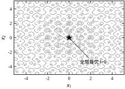
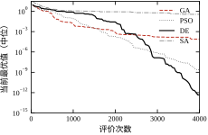
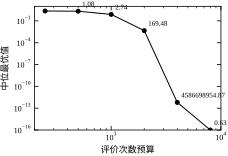
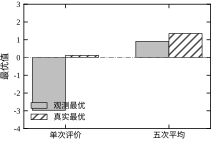
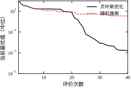
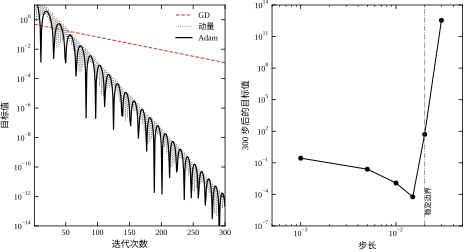

第 30 章的最后一个实验是 PI 整定：对象 G(s)=1/(s+1)^2，要求相位裕度不低于 45^\circ、灵敏度峰值不超过 2，目标是最小化阶跃响应的 IAE。这个问题有明确的数学形式，SLSQP 用 69 次评价就找到了解。但它的目标函数有一个不显眼的性质：IAE 与相位裕度都是“算出来”的，不是“写出来”的。
IAE 来自数值积分，相位裕度来自频率响应的穿越点插值。两者都没有解析表达式，交给优化器时只能靠有限差分近似梯度。有限差分本身没问题，问题在于评价函数带 0.01° 级的数值抖动——这个抖动在差分步长 10^{-8} 上会被放大成方向错误的梯度。第 30 章 §30.6.8 记录了这个现象：同一段 SLSQP 代码，用网格插值算相位裕度时停在 IAE =0.974 的次优点，改成解析求穿越频率后立刻找到 0.919。算法没变，变的是评价的精度；优化器把“评价噪声”误读成了“已经最优”。
这类目标在控制工程里随处可见：整定指标由仿真给出、工艺指标由有限元给出、性能指标由试验台测出。它们共同的特征是：能算出一个数，但算不出一个可靠的导数。 本章处理的正是这一类问题。
第一类：黑箱评价。 多体动力学仿真、有限元热模型、注塑成型的工艺模型，一次评价要几秒到几小时，内部是几十万行代码，没有可用的导数接口。你能做的只有“给一组参数、拿回一个数”。
第二类：离散与逻辑变量。 减速比只能选 10、12.5、16、20 这几档；继电器要么吸合要么释放；传感器只能在型谱里选；PID 参数在工程上常被要求取 E24 系列的值。可行域是一堆孤立的点或格子，梯度在这里没有定义。
第三类：目标本身不可微或带噪声。 相位裕度由插值给出、超调由试验测量、仿真结果带随机性。即使底层模型可微，经过“取最大值”“判断是否超限”“噪声采样”这些操作后，得到的函数也可能处处不可微。
图 31-1 画出了本章的基准测试函数 Rastrigin：全局最优唯一（原点，f=0），但周围密布着几十个局部极小。等高线上的每一个“小坑”都会把梯度法困住，而从坑里爬出来需要“先变差、再变好”的移动——这正是随机方法存在的理由。

三类问题的共同点不是“维度高”，而是“梯度这条信息通道被切断了”。判断该不该用本章的方法，只需要问一句：我能不能对目标与约束稳定地求导？ 能，就回第 30 章；不能，再往下看。
把两章的方法放在一张表里，分工就清楚了。
表 31-1 梯度法与无梯度法的分工
| 判据 | 用第 30 章（梯度/凸优化） | 用本章（启发式/随机） |
|---|---|---|
| 目标与约束 | 有解析式，可稳定求导 | 黑箱、不可微、带噪声 |
| 变量类型 | 连续 | 离散、混合、逻辑 |
| 规模 | 中大规模（10^2–10^6） | 小规模（10^0–10^2 维） |
| 评价成本 | 便宜，可反复调用 | 昂贵，每次都要珍惜 |
| 实时性 | 毫秒级闭环 | 离线或慢回路 |
| 结果保证 | 凸问题有全局最优证明 | 只有概率意义，需多次重复 |
这张表里最容易被忽视的是“规模”这一行。启发式方法的评价次数随维度增长得很不体面：同样的精度，2 维要 4000 次，10 维可能要几十万次。它们擅长的不是“大问题”，而是“导不出梯度的小问题”。把遗传算法用于 1000 维的神经网络训练，是典型的用错工具——那里应该用第 32 章的随机梯度类方法。
表中还有一行“结果保证”，它决定了两类方法的使用方式。梯度法给出的是一个点，你可以检查 KKT 残差；启发式给出的是一个分布，你必须重复多次才能说“这个算法在这个预算下大概能做到多少”。前者回答“最优解是什么”，后者回答“在给定预算下能找到多好”。 这两个问题的答案格式不同，验收方式也不同。
反例一：把“启发式”当成“更聪明”。 同一个 PI 整定问题，SLSQP 用 69 次评价找到 IAE =0.919；GA 用 1200 次评价找到 0.919，PSO 找到 0.919。三者的解几乎相同，但评价次数差了 17 倍。启发式并没有“更聪明”，它只是不要求梯度。当梯度可用时，它没有任何优势。§31.6.7 会给出这组数字的完整对照。
反例二：不设预算，永远“再跑一代”。 随机方法的收敛曲线没有明显的终点，多跑一代总可能更好一点。若不事先规定评价预算，“调参”会变成无底洞。更麻烦的是，后期的改善往往只是噪声：§31.6.4 的预算扫描显示，从 4000 次加到 8000 次，中位最优值从 6.3\times10^{-13} 降到 0，改善比 0.63——不是变好，而是两者的差别已经落到机器精度以下。
反例三：只看一次运行就下结论。 同一个 GA、同一份代码、同一个预算，只换随机种子，20 次运行的末值从 1.04\times10^{-6} 到 4.59\times10^{-4}，最差是中位的 5.8 倍；DE 的跨度更大，最差是中位的近 2000 倍。启发式算法的单次结果不是“答案”，只是分布中的一个样本。 报结果时必须给分布，不能给一个孤零零的数。
反例四：噪声目标下把“最幸运”当成“最好”。 给 Rastrigin 加标准差为 1 的评价噪声，单次评价跑 4000 次，观测到的最优值是 -2.968——比真实下界 0 还低，显然不可能。这个解的真实值是 0.115，乐观偏差 -3.05。原因是 4000 次评价里总有几次噪声恰好很负，优化器会专门去追这些“幸运样本”。把每个候选点评价 5 次取平均后，乐观偏差降到 -0.23，但搜索的有效步数也降到五分之一，真实最优反而变差。噪声不会让问题变简单，它只是把“优化”换成了“在噪声里做统计决策”。
四个反例对应四种失败：用错工具、不设预算、以偏概全、无视噪声。它们也是本章后面四节各自要解决的问题。
把上面的场景抽象出来，工程上要回答五个问题，本章逐个给工具。
五个问题里，第一个和第二个最容易被跳过。跳过预算，实验就无法比较；跳过种子，结论就无法复核。启发式方法的严谨性不体现在算法本身，而体现在实验协议上。
后面六节的走法是这样的：§31.2 把四种算法与贝叶斯优化放进同一个框架（统一预算、统一符号、统一停止准则），它是全章的地基；§31.3 逐条推导“参数为什么该取这个数”，只推能推的，推不出的部分明确标出来；§31.4 处理从公式到代码之间的落差——编码、约束、边界、可重复性、并行；§31.5 讲工程含义，重点是“什么时候不该用它”；§31.6 用七组实验把前面的每条断言都变成可核对的数字；§31.7 收拢成一页纸。如果只有半小时，读 §31.1、§31.5.1 的五个问题、§31.7.2 的表，就够做一次初步选型。
本章的一句话核心是：当梯度这条信息通道被切断时，用“多次评价 + 有偏的随机移动”来换信息；代价是预算，收益是“至少能给出一个可行解”。
这句话里有三个关键词。“多次评价”说明预算是第一等公民；“有偏的随机移动”说明随机不是瞎猜，每种算法都把随机性约束在某个结构里（种群的分布、温度的接受率、差分的方向）；“可行解”说明这类方法的下限很低——它几乎总能给你一个能用的解，但不保证是最优的。工程上选择它，往往不是因为“它能找到最好”，而是因为“别的办法连一个解都给不出”。
第 30 章的问题可以写成
\min_{x}\ f(x)\quad \mathrm{s.t.}\ \ g(x)\le 0,\ \ h(x)=0,\ \ x\in\mathbb{R}^{d}, \tag{31-1}
本章要解的问题在形式上几乎一样，但多了一条从来不写在公式里、却实实在在卡住你的约束：
\min_{x}\ f(x)\quad \mathrm{s.t.}\ \ x\in\mathcal{X},\ \ n_{\mathrm{eval}}\le B . \tag{31-2}
n_{\mathrm{eval}} 是评价次数，B 是预算，\mathcal{X} 是一个有界盒子（本章的基准问题取 [-5.12,5.12]^2）。把 B 写成约束而不是“顺便提一句”，是因为它决定了方法的选型：如果 B=10^6，随机搜索也能凑出好结果；如果 B=50，那么每一次评价都必须由模型“挑”出来，方法之间的差距就出来了。
预算一进约束，目标函数就变了性质。梯度法返回的是一个点 x^\star，并附一句“满足 KKT 条件”；而 (31-2) 返回的只能是一个随机变量 \hat{x}，它的好坏要用分布描述：
\mathrm{P}\left[f(\hat{x})-f^\star\le\varepsilon\right]\ \ge\ 1-\delta , \tag{31-3}
其中 f^\star 是全局最优值。这句话的意思是：换一个种子重跑，结果会不一样，所以你只能承诺“大概率达到多好”，不能承诺“一定达到多好”。 §31.6.2 的 20 个种子就是为这句话提供证据的——同一份 GA 代码，20 次跑出的最优值最大与中位差了 5.83 倍。
工程上还有两种常见的预算计量：墙钟时间与迭代代数。三者并不等价。单次评价的耗时可能随 x 变化（某些参数会让仿真自动缩小步长），而“代数”与评价次数的换算依赖种群规模：种群 40 跑 100 代是 4000 次评价，种群 100 跑 100 代就是 10000 次。跨算法比较时只看代数，等于让种群大的算法凭空多拿预算。 本章一律用 n_{\mathrm{eval}} 记账。
理论分析需要目标函数有已知的全局最优，实验才判得对错。本章用两个经典函数。
Rastrigin（式 31-4） 是主战场，二维形式为
f(x)=10d+\sum_{i=1}^{d}\left[x_i^2-10\cos(2\pi x_i)\right],\qquad d=2,\ x_i\in[-5.12,\,5.12]. \tag{31-4}
全局最优唯一：x^\star=(0,0)，f^\star=0。但每一项里的余弦把抛物面搅成了“蛋托”形状——以整数格点为中心密布着上百个局部极小，坑与坑之间隔着脊。梯度法从任意点出发几乎必然掉进最近的坑，然后在坑底停住；要出来，必须先接受一次“目标变差”的移动。这就是 §31.1.2 所说的“信息通道被切断”的具体形态，也是图 31-1 想让你看到的东西。
把图放大看，坑的位置是有规律的。f(0,0)=0、f(1,0)=1、f(1,1)=2，坑底彼此只差 1–2；而两坑之间的脊在 (0.5,0) 处高约 20.25。坑底差 1，翻脊要爬 20——这个比值是理解全部实验结果的钥匙。对单点随机游走（SA）来说，末温 0.68 时接受 20 的落差的概率是 e^{-29}，等于不可能；对种群方法来说，整群一起移动可以“绕过”脊：差向量指向的是另一批个体所在的位置，不必翻越当前点旁边那道墙。§31.6.1 里三种种群算法与 SA 之间的那道鸿沟，根子就在这里。
Rastrigin 还是可分的：f 是各分量之和，逐坐标的移动互不干扰。这既是它“看起来简单”的原因，也是它“实际上难”的原因——从原点出发沿任一坐标走，都要先翻过 20 的脊，所以坐标下降必然停在原点；而可分性又让交叉重组的收益变小（两个好个体拼起来仍然是各自坐标的好值，没有“组合出新结构”的空间），反倒是 DE 的逐分量交叉最适应这种结构。
Himmelblau（式 31-5） 是副战场：
f(x)=\left(x_1^2+x_2-11\right)^2+\left(x_1+x_2^2-7\right)^2 . \tag{31-5}
它有四个等价的全局最优，函数值都是 0，位置分别在 (3,2)、(-2.805,3.131)、(-3.779,-3.283)、(3.584,-1.848) 附近，中间夹着一个局部极大。四个解等价这件事很适合考察“样本效率”：找到哪一个都算成功，因此评价次数少的算法不会因为“选错了坑”而被冤枉，比的纯粹是“用多少个点能撞进任意一个坑”。
两个函数的分工因此很清楚：Rastrigin 考“能不能跳出局部”，Himmelblau 考“在极少评价下能不能定位”。§31.6.1 用前者比四种算法，§31.6.6 用后者比贝叶斯优化与随机搜索。实验的公共设置是：维度 d=2、种群 40、预算 4000、独立种子 20 个（从 20261020 起连续取），“够用”阈值 f<1.0。
四种算法看起来差别很大，抽象一层却是同一个循环：维持一组候选解（或一个当前解），用某种带随机性的规则生成新解，再按“谁更好”决定留谁。 差别只在“随机性被约束成什么形状”。
遗传算法（GA） 维持一个种群，用 k 元锦标赛选择（本章 k=3：随机抽 3 个，留最好的）挑出父代，再用模拟二进制交叉（SBX）产生子代。对每个分量独立抽 u\sim U(0,1)，令
\beta=\begin{cases}(2u)^{1/(\eta_c+1)}, & u<0.5,\\[2pt] \left[2(1-u)\right]^{-1/(\eta_c+1)}, & u\ge 0.5,\end{cases} \qquad \begin{aligned} c_1&=\tfrac12\left[(1+\beta)p_1+(1-\beta)p_2\right],\\ c_2&=\tfrac12\left[(1-\beta)p_1+(1+\beta)p_2\right],\end{aligned} \tag{31-6}
\eta_c=15 控制子代靠近父代的程度：\eta_c 越大，\beta 越集中在 1 附近，子代越像父代。变异用多项式变异，x'=x+\delta\,(x_U-x_L)，其中
\delta=\begin{cases}(2u)^{1/(\eta_m+1)}-1, & u<0.5,\\[2pt] 1-\left[2(1-u)\right]^{1/(\eta_m+1)}, & u\ge 0.5,\end{cases} \tag{31-7}
变异概率取 p_m=1/d（二维即 0.5），\eta_m=20。最后做精英保留：父代与子代合并，按目标值取前 40 个。精英保留这一条保证了“最优值曲线单调不升”，是收敛曲线可读的前提。
粒子群（PSO） 不交叉也不变异，它给每个粒子一个速度：
v_i\leftarrow w v_i+c_1 r_1\odot(p_i-x_i)+c_2 r_2\odot(g-x_i),\qquad x_i\leftarrow x_i+v_i , \tag{31-8}
其中 p_i 是粒子 i 的历史最优，g 是全体历史最优，r_1,r_2 是逐分量均匀随机数。本章取 w=0.729、c_1=c_2=1.494——这组数不是随手写的，它对应“速度更新算子的谱半径略小于 1”，粒子轨迹会收敛而不是发散（§31.3.3 会给出这个结论的来历）。速度再按定义域宽度的 0.5 倍限幅，防止粒子一步飞出盒子。
差分进化（DE/rand/1/bin） 用种群自身的差向量当步长：
v_i=x_a+F\,(x_b-x_c),\qquad u_{ij}=\begin{cases}v_{ij}, & \text{若 } r_j<C_R \text{ 或 } j=j_{\mathrm{rand}},\\ x_{ij}, & \text{否则},\end{cases} \tag{31-9}
a,b,c 是随机挑的三个互异个体，F=0.7、C_R=0.9。差分向量 x_b-x_c 的长度自动随种群收敛而收缩，这是 DE 不需要单独设计步长表的原因。选择是贪心的：f(u_i)<f(x_i) 才替换。j_{\mathrm{rand}} 那一项保证至少有一个分量来自变异向量，否则 C_R 偏小时子代可能原封不动。
模拟退火（SA） 只有一个当前解，每步在它周围撒一个高斯点 x_n=x+\sigma\xi（\sigma=0.3），然后按 Metropolis 准则决定接不接受：
\mathrm{P}(\text{接受})= \begin{cases}1, & \Delta f\le 0,\\ \exp\left(-\dfrac{\Delta f}{T}\right), & \Delta f>0,\end{cases} \qquad T_{k+1}=\alpha T_k , \tag{31-10}
\Delta f=f(x_n)-f(x)，初温 T_0=5，降温系数 \alpha=0.9995。温度高时坏解也常被接受，算法在景观上大幅游走；温度降下来后逐渐变成贪心下降。四种算法的对比如表 31-2。
表 31-2 四种无梯度算法的结构对照
| 算法 | 维持的状态 | 随机性来源 | 如何“利用”已有信息 | 主要参数 |
|---|---|---|---|---|
| GA | 40 个个体 | SBX 交叉 + 多项式变异 | 锦标赛选择保留好基因 | p_m=1/d、\eta_c=15 |
| PSO | 40 个粒子 + 速度 | 两个均匀随机权重 | 向个体最优与全局最优靠拢 | w=0.729、c_1=c_2=1.494 |
| DE | 40 个个体 | 差分方向 + 二项交叉 | 贪心替换，差向量自适应收缩 | F=0.7、C_R=0.9 |
| SA | 1 个当前解 | 高斯邻域 | Metropolis 接受率随温度衰减 | T_0=5、\alpha=0.9995 |
这张表最该记住的是最后一列：四种算法的参数都不是“调得越猛越好”，每一组数背后都有一条稳定性或多样性上的理由。 §31.5.2 会把这条理由逐条展开。
把四种算法各走一步，能看清“随机性被约束成什么形状”这句话的实际含义。取 d=2、定义域 [-5.12,5.12]。
GA 走一步。 父代 p_1=(2,2)、p_2=(0,0)，抽到 u=0.3，\eta_c=15 时 \beta=(0.6)^{1/16}=0.969。代进 (31-6)：c_1=\frac12[1.969\,p_1+0.031\,p_2]=(1.97,1.97)，c_2=\frac12[0.031\,p_1+1.969\,p_2]=(0.03,0.03)。一个子代落在父代连线之外，一个落在之内——外推与内插同时发生，这正是 SBX 能探到父代凸包之外的原因。
PSO 走一步。 粒子 x=(1,1)、v=(0.2,-0.1)、个体最优 p=(0.5,0.5)、全局最优 g=(0,0)，抽到 r_1=0.6、r_2=0.4。按 (31-8)，
v\leftarrow0.729(0.2,-0.1)+1.494\times0.6\,(-0.5,-0.5)+1.494\times0.4\,(-1,-1)=(-0.90,-1.12),
于是 x\leftarrow(0.10,-0.12)。一步跨了 1.3，几乎等于从中心坑跳到相邻坑——速度项让它比 GA 的子代走得更远，也更容易越过脊。
DE 走一步。 x_i=(1,1)，随机挑到 a=(2,0)、b=(3,1)、c=(1,3)，F=0.7：v=(2,0)+0.7(2,-2)=(3.4,-0.6)。抽到 r=(0.2,0.95)，C_R=0.9 时第一分量取 v、第二分量保留 x_i，得 u=(3.4,1)。变异方向由 b-c=(2,-2) 决定，与 x_i 本身无关——这是 DE 与 GA 最本质的差别。
SA 走一步。 当前 x=(0.2,-0.3)，高斯扰动得 x_n=(0.44,-0.66)。代入 (31-4)：f(x)=20.13、f(x_n)=35.28，\Delta f=15.15。第 100 步时 T=5\times0.9995^{100}=4.76，接受概率 e^{-15.15/4.76}=0.041——只有 4%，但不是 0。SA 的全部机制就在这 4% 里：它靠“偶尔接受坏解”翻脊，而这个概率由温度精确控制。
四步对比下来，GA 的随机性被“父代连线”约束，PSO 的被“两个最优”约束，DE 的被“种群差向量”约束，SA 的被“温度”约束。约束越紧，单步越有方向；约束越松，越容易翻脊，也越容易乱走。
前四种算法都只把评价结果当作“分数”，用完就丢。当 B 只有几十次时，这种浪费不可接受：每个点都花了钱，应该用它去推断“别处大概什么水平”。贝叶斯优化的做法是维护一个代理模型。
设 f 服从零均值高斯过程，
f(x)\sim\mathcal{GP}\big(0,\,k(x,x')\big),\qquad k(x,x')=\sigma_f^2\exp\left(-\frac{\|x-x'\|^2}{2\ell^2}\right), \tag{31-11}
即 RBF 核，本章取 \ell=0.8、\sigma_f=1。给定已评价的 n 个点 \{(x_i,y_i)\}，记 k_\ast=[k(x_i,x)]、K 为核矩阵，则任意点的后验为
\mu(x)=k_\ast^{\top}\left(K+\sigma_n^2 I\right)^{-1}y,\qquad \sigma^2(x)=k(x,x)-k_\ast^{\top}\left(K+\sigma_n^2 I\right)^{-1}k_\ast , \tag{31-12}
\sigma_n^2=10^{-6} 是数值稳定项。\mu 给出“预测值”，\sigma 给出“没去过的地方有多不确定”——离已采点越远，\sigma 越大。这两条信息合起来决定下一次采样点，用的是期望改进（EI）：
\mathrm{EI}(x)=\left(f_{\mathrm{best}}-\mu(x)-\xi\right)\Phi(z)+\sigma(x)\,\varphi(z), \qquad z=\frac{f_{\mathrm{best}}-\mu(x)-\xi}{\sigma(x)}, \tag{31-13}
\Phi,\varphi 是标准正态的分布与密度函数，\xi=0.01 是“要求至少改进这么多才算数”的余量。EI 的结构值得读一遍：第一项奖励“均值低”，第二项奖励“方差大”。前者是利用（exploitation），后者是探索（exploration），两者的权重由 \sigma 自动配平——不确定性大的地方，即使均值不低，EI 也可能更大。
(31-12) 不是拟合出来的，是条件分布。高斯过程的核心假设是“任意有限个点的函数值服从联合高斯”，于是给定观测后，未观测点的分布就是条件分布：均值是观测的线性组合，方差是“先验方差减去已被解释的部分”。两个自检能立刻验证它。其一，在已采点上，k_\ast 就是 K 的对应一列，\mu(x_i)=y_i、\sigma^2(x_i)\to0——它精确插值。其二，离所有点无穷远时，k_\ast\to0，\mu\to0、\sigma^2\to\sigma_f^2——它退回先验。前者说明模型“记得住”，后者说明它“知道自己不知道”；缺了后者，探索项就无从谈起。
\ell 与 \sigma_f 原则上不该手调，应最大化边际似然：\log p(y)=-\frac12 y^{\top}(K+\sigma_n^2I)^{-1}y-\frac12\log|K+\sigma_n^2I|-\frac{n}{2}\log2\pi。第一项奖励“拟合得好”，第二项惩罚“模型太复杂”，两项拉锯会自动定出长度尺度——数据密的地方 \ell 变小，稀疏的地方变大，比手调一个全局常数合理。本章固定 \ell=0.8，是为了让 §31.3.5 的手算能对上号；生产环境里用边际似然或几次试跑定更稳妥。
本章的实现是 8 个随机初值 + 32 次 EI 迭代，共 40 次评价；每次迭代在“3000 个随机候选 + 最优点邻域 500 个候选”里挑 EI 最大的那个。用随机池而不是对 EI 求梯度，是因为 EI 本身带 \Phi 与 \varphi，梯度虽然可写但每步要更新一次 Cholesky 分解，代价与“多算几百个候选”相当。真正的成本在 (31-12)：每加一个点，K 增大一行一列，Cholesky 是 O(n^3)。这就是贝叶斯优化把 n 卡在几百以内的原因。
预算定了，还要定“什么时候提前收工”。三种停止准则按优先级排列：
第一，预算耗尽。 最硬的约束，到了 B 就停，不管结果好坏。它保证了不同算法之间的可比性。
第二，阈值达到。 目标值低于某个“够用”水平就停。本章取 f<1.0 作为达标线：Rastrigin 的全局最优是 0，f<1.0 意味着已经落在原点附近的盆地里，剩下的差距对工程意义不大。这个准则的价值在于它给出了一个比“最终值”更能说明问题的指标——达标评价数，即第一次低于阈值时已经花掉的评价次数。§31.6.1 的表里，GA 中位 380 次评价达标、PSO 540 次、DE 700 次，而 SA 只有 5% 的种子能在 4000 次内让最终值低于 10^{-2}。看最终值只能知道“谁更好”，看达标评价数才知道“谁更快”。
第三，曲线进入平台。 连续若干代的最优值改善低于某个相对量（例如 10^{-3}）就停。这条准则只适合离线场景：它依赖对“平台”的判断，而平台可能只是暂时的。在线或半在线场景里，前两条更可靠。
三者不是互斥的，实现里通常是“任一满足即停”。但要注意一个记账细节：提前停止省下的预算不能挪给别人用，否则比较又失去了共同基准。要么所有算法都跑满 B，要么所有算法都按同一阈值停。§31.6.7 的 PI 整定就是被这条规矩逼出来的：GA 与 PSO 各用 1200 次评价，SLSQP 只用 69 次，看起来“不公平”，但那是梯度法在同一个问题上本来就只需这么多次——差异本身就是要报告的结论。
阈值法有一个副作用常被忽略：报告里必须同时写阈值和达标次数，缺一个数就失去意义。 同一个算法的达标次数会完全变样，甚至从“全部通过”翻转成“一个都不过”——本章 GA 在 f<1.0 下中位 380 次，在 f<10^{-8} 下 20 个种子无一通过；DE 则正好相反。把这两组数放在一起看才公平：GA 快，是因为它停在浅坑；DE 慢，是因为它要一路下到 10^{-13}。只报“谁先达标”而不报阈值，等于拿不同终点线的比赛比成绩。 阈值本身也要有物理依据：f<1.0 之所以合理，是因为 Rastrigin 的坑间距约 1，跨过一个坑的意义远大于坑内再降三个数量级；换到 IAE 这类有量纲的指标上，阈值就该由“用户能感知的差别”倒推。
前面一直把 f 当成“给定”的黑箱。实际上评价函数是代码，代码会出错，而错误的代价在优化里会被放大——一个 NaN 就能让整代选择失效。本节五条是本章七个实验共用的写法。
第一，计数只能有一个入口。 所有算法都通过同一个包装器调用目标，计数加在“真正调用”那一层：
def make_counter(fun):
n = [0]
def wrapped(X):
X = np.atleast_2d(X)
Y = np.asarray(fun(X), float).ravel()
n[0] += X.shape[0] # 按行计数，向量化调用也正确
Y[~np.isfinite(Y)] = np.inf # NaN / inf 一律当最差
return Y
return wrapped, lambda: n[0]这个包装器同时解决三件事：预算与实际调用永远一致（§31.7.3 错误一）；向量化与逐点两种实现的计数口径统一（错误三）；非法值不会污染 argmin——np.argmin([nan, 1.0]) 返回 0，等于把最差的点当成最好的，而 argmin([inf, 1.0]) 返回 1，至少方向是对的。
第二，缓存要声明是否计入预算。 GA 的精英保留、DE 的重复个体、SA 的回访都会重复落到同一点。开缓存能省时间，但“命中不计入预算”会让不同算法的有效预算不同。本章一律不开缓存，宁可多算；若开了，报告里必须写命中率与“命中是否计数”。
第三，评价失败也要算一次预算。 抛异常不代表没花钱——真实系统里那一次尝试往往耗时更长（超时、重试、日志）。本章的写法是捕获异常、返回 +\infty、计数照加。
第四，t_{\mathrm{eval}} 取中位数，不取均值。 偶发的垃圾回收、磁盘抖动、别的进程抢占会把均值拉高一倍以上，而 (31-30) 要用的是一个“典型值”。本章测 t_{\mathrm{eval}} 的做法是连测 100 次取中位，再乘 1.2 当余量。
第五，包装器本身要足够薄。 一层 Python 函数调用约 1 μs，对 1 ms 的评价可以忽略；但如果目标本身只要 10 μs（例如解析函数），包装器的开销就占 10%。这时要么把计数写进目标内部，要么换编译语言。“优化器比目标还慢”不是笑话，在廉价目标上很常见。
先划一条界线：本章的方法没有“收敛到全局最优”的定理可用。能证明的只有三条弱结论。
第一条是单调性。 GA 的精英保留与 DE 的贪心替换都保证了
f_{t+1}\le f_t , \tag{31-14}
序列单调不增且有下界（f\ge0），因此必定收敛到某个 f_\infty——但 f_\infty 完全可能远离 f^\star=0。这条结论的价值不在“收敛”，而在“曲线可读”：图 31-2 用“当前最优”作图，曲线必须单调，否则读者无法区分“算法在进步”与“算法在漂移”。PSO 与 SA 也是同样的道理，它们记录的是历史最优。
第二条是 SA 的平稳分布。 固定温度下它采样的是 Boltzmann 分布（§31.3.4），只有 T\to0 才集中到全局最优。理论上要 T_k\ge c/\log k 才能依概率收敛，而这种降温在 4000 次预算内只降几个百分点，实际走不完。
第三条是没有全局收敛定理。 GA、PSO、DE 的收敛性结论都建立在“种群足够大、迭代足够久”的强假设上，且多数只能保证局部收敛。所以本章的实验报告“20 个种子的结果分布”，不报告“收敛到最优”。
至于 No Free Lunch，只需记住它的正确用法：把所有可能的目标函数取平均之后，任意两种算法的期望性能相同。这句话提醒你“不存在通用最优算法”，但不意味着“算法之间没有差别”——在具体一类问题上，差别就是 §31.6 的那些数字。
种群 N=40、锦标赛 k=3 时，种群中最好的个体获胜，当且仅当它出现在这 3 次抽样里（有放回）：
p_{\mathrm{sel}}=1-\left(1-\frac{1}{N}\right)^{k}=1-\left(\frac{39}{40}\right)^{3}=0.073 . \tag{31-15}
随机选择的概率是 1/40=0.025，所以选择压力只有 2.9 倍，最优个体每代期望被选中 40\times0.073=2.9 次。这个数直接解释了 §31.6.1 里 GA 的表现：中位 7.87\times10^{-5}，比 DE 差 8 个数量级，但 20 个种子全部达标。压力温和，进步慢，却不容易早熟。
把 k 从 3 加到 8：p_{\mathrm{sel}}=1-(39/40)^8=0.183，期望 7.3 次，压力翻 2.5 倍，代价是多样性塌缩更快。多样性由变异维持——p_m=1/d=0.5 意味着每个子代平均有一个分量被扰动，扰动幅度由 \eta_m=20 定。选择压力与变异强度共同决定了“探索预算”怎么分配。
精英保留把 (31-14) 坐实，代价是种群容易同质化：精英长期霸住位置会压制交叉产生的子代。这是 GA 在 4000 次评价内停在 10^{-4} 量级的结构性原因，不是种子没选好。
经典遗传算法还有一条理论支撑：模式定理（schema theorem）。它估计的是“一个模式”（若干位固定、其余任意的个体集合）在下一代中的期望数量，简化到实数编码的直觉版本是 E[m(H,t+1)]\ge m(H,t)\,[f(H)/\bar f]\,[1-p_c\,\delta(H)/(l-1)-o(H)\,p_m]。方括号外的因子是“选择”，方括号内是“破坏”：交叉以 p_c 打断长度为 \delta(H) 的模式，变异以 p_m 打掉 o(H) 个已定位。代入本章的数：d=2、p_m=0.5，一个只固定单个分量的模式 o(H)=1，光变异一项就给出 1-0.5=0.5 的存活率——每一代都有一半概率把这个“好基因”打掉。
这个数是 p_m=1/d 的直接后果：维度越低，p_m 越大，破坏越强。它解释了 GA 为什么停在 10^{-4}——要保持一个精细结构，变异率必须很小；但 p_m 小了又不探索。“探索”与“保留”在低维问题上直接冲突，这是 GA 的结构性弱点，不是参数没调好。 DE 没有这个问题：它的变异作用在整条差向量上，不会逐分量打掉好基因；PSO 也没有，它压根不做“位”的操作。
SBX 的参数 \eta_c 也值得算一遍，因为它决定了“交叉到底能走多远”。子代是 c_{1,2}=\frac12\left[(1\pm\beta)p_1+(1\mp\beta)p_2\right]，\beta 由均匀随机数变换而来：u=0.1 时 \beta=(0.2)^{1/16}=0.90（子代在父代之间），u=0.9 时 \beta=(5)^{1/16}=1.11（子代落到父代区间之外 11%）。\beta<1 是“内插”，\beta>1 是“外推”，两者的分界正好在 u=0.5。 于是这条交叉算子的行为很干净：一半概率在盒内重组，一半概率向盒外扩张，扩张幅度随 u\to1 增大——理论上是无界的，实际上被定义域截断兜住。
这解释了为什么 p_m 比 \eta_c 更关键。外推虽然能出盒，但幅度只有 10%–30%，且方向被父代连线锁死；真正能改变“搜索方向”的是逐分量的多项式变异。调 GA 时先调变异率、再调 \eta_c，顺序不能反。
\eta_c 越大，\beta 越接近 1，子代越像父代。\eta_c=15 时 \beta 的中位数是 (0.5)^{1/16}=0.96，也就是说一半以上的交叉几乎不改变个体。这看起来“保守”，但对已经收敛的种群是好事：它让 GA 在后期做局部细化而不是把好个体打散。代价是前期太慢，与 §31.6.3 里“台阶型曲线”的形态一致。
把 r_1,r_2,p,g 冻结（在单次迭代内成立），逐分量看 (31-8)。令 \varphi=c_1r_1+c_2r_2，平衡点 \bar{x}=(c_1r_1p+c_2r_2g)/\varphi，误差 e=x-\bar{x}，则
\begin{bmatrix}v_{k+1}\\ e_{k+1}\end{bmatrix} =\begin{bmatrix}w & -\varphi\\ w & 1-\varphi\end{bmatrix} \begin{bmatrix}v_{k}\\ e_{k}\end{bmatrix}. \tag{31-16}
特征多项式是 \lambda^2-(1+w-\varphi)\lambda+w=0，两根之积为 w、之和为 1+w-\varphi。稳定的充要条件是
0<w<1,\qquad 0<\varphi<2(1+w). \tag{31-17}
本章 w=0.729、c_1=c_2=1.494，故 \varphi=2.988<2(1+0.729)=3.458；判别式 (1+w-\varphi)^2-4w=1.585-2.916=-1.331<0，两根为共轭复根，模为 \sqrt{w}=0.854。意思是：在权重冻结的那一步里，误差按 0.854 的比率收缩，10 步缩到 0.854^{10}=0.206。
这组经典参数的来历也能顺手算出来。Clerc 的收缩因子取
\chi=\frac{2}{\left|2-\varphi_s-\sqrt{\varphi_s^2-4\varphi_s}\right|}, \tag{31-18}
\varphi_s=4.1 时 \chi=0.730，再令 c_1=c_2=\chi\varphi_s/2=1.494，就是本章用的数。取 4.1 而不是 4，是为了 \varphi 达到上界时仍留一点裕量。
必须说清这条结论的边界：它保证“速度不指数发散”，不保证“收敛到全局最优”。p 与 g 每步都在变，\bar{x} 跟着漂移，所以 0.854 描述的是“追移动目标”的跟随速度。它解释的是为什么这组数可以直接用而不必逐题调，不是为什么 PSO 能找到最优。
DE 的步长由种群给出。设某分量在种群里的标准差为 \sigma，两个独立样本之差满足 \mathrm{E}|X-Y|=2\sigma/\sqrt{\pi}=1.128\sigma，于是变异步长的期望是
\mathrm{E}\,|v_i-x_i|\approx F\cdot1.128\,\sigma=0.79\,\sigma . \tag{31-19}
初始均匀分布 \sigma=10.24/\sqrt{12}=2.96，期望步长 2.33，约为定义域的 23%；种群收敛后 \sigma\to0，步长同步收缩。这是 DE 不需要步长表的原因，也是它最终精度最高的原因（中位 4.53\times10^{-13}）。 但它的达标评价数是 700 次，反而大于 GA 的 380 次——精度高不等于爬得快：GA 靠精英保留先把值压到 1.0 以下，DE 则在后半程持续下探。
F=0.7、C_R=0.9 是 DE/rand/1/bin 这一支的取值，名字里三部分都可以换。“rand”指基向量随机挑，换成“best”就用当前最优，收敛更快但更容易早熟；“1”指用一对差向量，“2”用两对，步长翻倍、探索更强；“bin”指逐分量二项交叉，“exp”则是连续段交叉。工程上常见的是 rand/1/bin 与 best/1/bin 两支，前者稳、后者快。
F 是步长的油门：从 0.5 调到 1.0，期望步长从 0.56\sigma 到 1.13\sigma。超过 1 以后 v_i 可能落到种群分布之外，探索性最强，也最容易把已经收敛的种群打散。自适应变体（jDE、SHADE）让每个个体自带一对 F_i,C_{R,i}，成功就保留、失败就重抽——它把“调参”变成了种群里的一场小型进化，代价是实现复杂、复现更难。本章坚持用固定参数，是为了让每个数字都能对应到一条公式上；真要上生产，SHADE 通常是更好的默认选择。
SA 的问题正好相反：温度按固定比例降，不跟着进度走。Metropolis 准则之所以有效，是因为它满足细致平衡：
\pi(x)\,q(x\to y)\,A(x\to y)=\pi(y)\,q(y\to x)\,A(y\to x). \tag{31-20}
取对称高斯提议 q 与 A=\min\left(1,e^{-\Delta f/T}\right)，解得 \pi(x)\propto e^{-f(x)/T}。固定 T 下算法采样的是 Boltzmann 分布，只有 T\to0 才集中到全局最优。
本章 T_0=5、\alpha=0.9995、B=4000，末温 T=5\times0.9995^{4000}=0.68。此时接受一个 \Delta f=0.7 的上坡移动的概率是 e^{-0.7/0.68}=0.36——末段仍有三分之一以上的概率往差的方向走；再加上邻域尺度 \sigma=0.3 固定不变，末段无法细化。§31.6.1 里 SA 的成功率只有 5%，原因就在这里：不是算法失效，是这组参数在 4000 次内没冷透。
按目标末温反解降温系数：若要求 T_B/T_0=10^{-3}，则
\alpha=\left(\frac{T_B}{T_0}\right)^{1/B}=10^{-3/4000}=0.99827 , \tag{31-21}
比 0.9995 快得多。这一步反解，是所有“预算固定”的退火实现动手前都该做的。
邻域尺度 \sigma=0.3 是 SA 的第二个参数，常被忽略。它与温度分工不同：温度决定“敢不敢走”，邻域决定“能走到哪”。 末温 0.68 时若把 \sigma 从 0.3 降到 0.03，上坡的 \Delta f 随之变小、接受率大幅提高，但每步位移也变小，细化能力反而增强。这说明“缩小邻域”和“降温”效果相似、机理不同：一个改提议分布，一个改接受准则。工程上更稳的做法是两者同步缩：T_k 按 (31-21) 走，\sigma_k=\sigma_0\sqrt{T_k/T_0}——对二次型坑底，Boltzmann 分布的方差正比于 T，所以宽度按 \sqrt{T} 缩是有依据的，不是拍出来的。
本章没有这么做，于是出现了 §31.6.1 的 5% 成功率。这是全章最值得做而没做的一组对照实验：从末温 0.68 改到 10^{-3}，上坡接受率会从 36% 掉到可以忽略，末段的细化能力完全不同。本书有意把它留作练习（理由见 §31.7.5），但读者若在自己的问题上照抄本章参数，务必先做这一步反解。
§31.2.4 给了后验 (31-12)，这里推采集函数。设 Y=f(x)\sim N(\mu,\sigma^2)，记 t=f_{\mathrm{best}}-\xi，则改进量的期望为
\mathrm{EI}(x)=\mathrm{E}\left[(t-Y)^{+}\right] =\int_{-\infty}^{t}(t-y)\,\frac{1}{\sigma}\varphi\!\left(\frac{y-\mu}{\sigma}\right)\mathrm{d}y =(t-\mu)\Phi(z)+\sigma\varphi(z),\qquad z=\frac{t-\mu}{\sigma}. \tag{31-22}
推导只有一步：把积分按 t 与 y 拆成两块，第一块给 (t-\mu)\Phi(z)，第二块给 \sigma\varphi(z)。
这个式子把“探索-利用”写成了两项之和，而且配平不需要任何权重。第一项 (t-\mu)\Phi(z) 在 \sigma 小时趋近 \max(0,t-\mu)，退化为贪心；第二项 \sigma\varphi(z) 在 \sigma 大时主导，奖励没去过的地方。代个数：在 \mu=f_{\mathrm{best}} 的点上，\mathrm{EI}\approx0.399\sigma-0.5\xi，即“完全没有信息的地方”的基线价值正比于 \sigma。
后验的形状完全由核的两个旋钮决定：长度尺度 \ell 与幅度 \sigma_f。RBF 核 k(x,x')=\sigma_f^2\exp\left(-\|x-x'\|^2/(2\ell^2)\right)，两点相距 \ell 时相关性 e^{-1/2}=0.61，相距 2\ell 时 e^{-2}=0.135，相距 3\ell 时 e^{-4.5}=0.011。超过三个长度尺度，后验就退回先验——那里既没有信息，也没有梯度，只剩一个常数方差。本章取 \ell=0.8、\sigma_f=1，而定义域边长 10.24，\ell 只占 7.8%；Himmelblau 的搜索盒 [-5,5]^2 里 40 个点的平均最近邻间距约 1.58，正好是 \ell 的两倍。所以到第 40 次评价时，已采样点附近的 EI 已经很小，算法会自己把下一个点推到“离所有点都超过 2”的地方，那里的后验方差接近 \sigma_f^2=1。\ell 小不是缺陷，它让贝叶斯优化在大盒子里表现出“局部精细、全局粗放”的性格： 要覆盖整个盒子，要么把 \ell 调大（后验更平滑，但对细节更迟钝），要么先用别的手段把盒子缩小。\sigma_f 的作用更直接：它只是把 EI 整体乘上一个尺度，不改变“下一步去哪”，只改变“这次改进值多少”。也正因如此，\sigma_f 取错只影响停止判断，\ell 取错才会让人去错地方。
一维手算能把这几个数看清楚。已在 x=0 测得 f=1、在 x=1 测得 f=0，问 x=0.5 处。取 \ell=0.8、\sigma_f=1、无噪声：k(0.5,0)=k(0.5,1)=e^{-0.195}=0.822，k(0,1)=e^{-0.781}=0.458。2\times2 的逆矩阵只有一行算术，得 \mu(0.5)=0.822/(1+0.458)=0.564，\sigma^2(0.5)=1-0.927=0.073，即 \sigma=0.270。注意到 \mu 是 0.564 而不是两个观测的均值 0.5：零均值先验把预测往下拉了一点，权重里出现了一个负号，这是零均值 GP 的正常现象，不是算错。此时取 f_{\mathrm{best}}=0、\xi=0.01，z=(-0.01-0.564)/0.270=-2.13，\Phi(z)=0.0166，\varphi(z)=0.0417，\mathrm{EI}=(-0.574)(0.0166)+0.270(0.0417)=0.0018——比噪声还小，这个点永远不会再被选中。
再看 x=3：k(3,0)=0.00088、k(3,1)=0.0439，\mu=-0.024、\sigma=0.999，\mathrm{EI}=0.0143\times0.506+0.999\times0.399=0.406，是 x=0.5 处的 226 倍。EI 宁愿去一个完全没测过、后验均值还略低于历史最优的远处，也不愿在两个好点之间补一刀——这就是“探索”在数值上的样子。不过这个 0.406 里绝大部分来自 \sigma_f\varphi(z)，即先验本身：它假定“没去过的地方可能和先验均值一样好”。若先验均值取得过于乐观（Himmelblau 的真值下界是 0，取 0 恰好乐观），远处就会被系统性高估，算法会过度探索。§31.6.6 里 40 次评价只把值压到 1.5\times10^{-3}，一半原因在 \ell 偏小，另一半就在这里。
顺带把 EI 与常见的置信下界（UCB，最小化写法 \mu-\kappa\sigma）对上。令 t=\mu，则 \mathrm{EI}=\sigma\varphi(0)=0.399\sigma，等效 \kappa=0.399；令 t\gg\mu（该点看着就比历史最优好），\mathrm{EI}\to t-\mu，等效 \kappa\to0，纯利用；令 t\ll\mu，\mathrm{EI}\to0，等效 \kappa 也趋于 0，但方式是“放弃”而不是“利用”。EI 的等效 \kappa 不是常数，而是随“这个点看起来有多好”自动变化：看着好的地方大胆去，看着差的地方不去，说不清的地方按 \sigma 定价。UCB 的 \kappa 要人手调，调大了满世界乱跑，调小了原地不动；EI 把这件事外包给了后验分布。
(31-22) 是单步前瞻（myopic）的：它最大化“下一次评价的期望改进”，不考虑“这次评价会让后面几次更聪明”。多步版本要解动态规划，代价远大于收益，实践中基本都用单步。
成本在 (31-12)：每轮重新分解 K+\sigma_n^2I，O(n^3)。n=40 时是 6.4\times10^{4} 次浮点运算，可以忽略；n=4000 时是 6.4\times10^{10}，不可接受。这就是贝叶斯优化的规模上限。
最后看“梯度可用、但要迭代很多次”的情形。取病态二次目标 f(x)=\frac12x^{\top}Ax，A=\mathrm{diag}(1,100)，条件数 \kappa=100。
梯度下降的更新与误差递推是
x_{k+1}=x_k-\eta\nabla f(x_k),\qquad e_{k+1}=(I-\eta A)\,e_k , \tag{31-23}
逐坐标看，误差按因子 1-\eta\lambda_i 衰减。要所有坐标都衰减，必须
0<\eta<\frac{2}{\lambda_{\max}}=0.02 . \tag{31-24}
这就是步长上界，不是经验值，是算出来的：超过它，最大特征值方向的误差开始交替放大。
上界之内，收敛速度由条件数决定。最优步长 \eta^\star=2/(\lambda_{\min}+\lambda_{\max})=0.0198 给出误差率 (\kappa-1)/(\kappa+1)=0.980，每步只缩 2%。本章取 \eta=0.01，慢模态因子 1-0.01=0.99，损失按 0.9801^{k} 衰减：300 步后 0.5\times0.9801^{300}=1.2\times10^{-3}，与实测 1.2025\times10^{-3} 对上。表 31-3 是步长扫描，三档都能用解析式核对。
表 31-3 GD 步长与收敛（\kappa=100，300 步）
| \eta | 1-\eta\lambda_{\max} | 解析预测 | 实测末值 | 现象 |
|---|---|---|---|---|
| 0.001 | 0.9 | 2.74\times10^{-1} | 2.74\times10^{-1} | 慢模态主导，几乎不动 |
| 0.005 | 0.5 | 2.47\times10^{-2} | 2.47\times10^{-2} | 仍在慢模态 |
| 0.01 | 0 | 1.20\times10^{-3} | 1.20\times10^{-3} | 快模态一步清零 |
| 0.015 | -0.5 | 5.8\times10^{-5} | 5.76\times10^{-5} | 快模态交替衰减 |
| 0.02 | -1 | 5.0\times10^{1}（不降） | 5.00\times10^{1} | 临界，等幅振荡 |
| 0.03 | -2 | 18 步 3.4\times10^{12} | 3.44\times10^{12} | 越过上界 |
两种加速手段在这张表的同一问题上都有效。动量法累积历史梯度：
v_{k+1}=\beta v_k-\eta\nabla f(x_k),\qquad x_{k+1}=x_k+v_{k+1}, \tag{31-25}
\beta=0.9 时，一致方向上的等效步长被放大 1/(1-\beta)=10 倍。本章 100 步后损失 9.46\times10^{-5}，而 GD 是 6.70\times10^{-2}，差 708 倍。理论上按 \kappa 调优的 heavy-ball 收敛率是 (\sqrt{\kappa}-1)/(\sqrt{\kappa}+1)=0.818，100 步可到 10^{-9}；本章固定 \eta=0.01 未调优，只到 10^{-4} 量级——但加速比仍有两个数量级以上。
Adam 逐坐标归一化：
m_k=\beta_1m_{k-1}+(1-\beta_1)g_k,\quad s_k=\beta_2s_{k-1}+(1-\beta_2)g_k^{2},\quad x_{k+1}=x_k-\eta\,\frac{\hat{m}_k}{\sqrt{\hat{s}_k}+\epsilon}, \tag{31-26}
\beta_1=0.9、\beta_2=0.999，\hat{m},\hat{s} 是偏差修正后的矩估计。分母 \sqrt{\hat{s}} 抹掉了梯度的绝对尺度，于是 \lambda=1 与 \lambda=100 两个坐标“看起来”一样好走。代价是路径不均匀：本章 50 步到 1.17\times10^{-3}、100 步到 4.36\times10^{-4}（只降 2.7 倍），末值 2.25\times10^{-13}（后 200 步降了 9 个数量级）。用 Adam 时不能看前 50 步就判断好坏，中段平台很容易被误读成“已经收敛”。
三个方法的收敛条件可以统一成一句话：步长必须与曲率匹配。 GD 要求 \eta<2/\lambda_{\max}；动量要求 \beta 与 \eta 一起满足；Adam 用归一化绕开了绝对曲率，但对学习率衰减仍然敏感——常数步长的 Adam 在随机梯度下只收敛到 \eta 量级的邻域，不会到 0。
前面的推导都带前提，而工程上的参数往往正好踩在前提之外。把前提列清楚，比记住结论更有用。
PSO 的谱半径 0.854 假设三件事：w,c_1,c_2 不随迭代变化；位置与速度没有被人为截断；g 每轮同步更新。本章的实现第一条满足，第二条不满足（速度被限到 \pm5.12），第三条在串行实现里满足。速度一被截断，粒子就进入“贴边滑行”的状态，谱半径那套线性分析不再成立——它只保证“不发散”，不保证“还能飞出去”。所以 §31.4.3 的边界处理不是小细节，它直接改写了这条保证的适用范围。
模式定理假设无限种群。 有限种群有一种它没有描述的力量：漂变。40 个个体的种群，一个既不被选择也不被淘汰的中性基因，大约 2N=80 代内就会随机固定或消失。本章 GA 跑 4000 次评价，约 100 代，正好在这个尺度上——这意味着“某次运行里某个好基因保住了”有相当成分是运气，也是 §31.6.2 里 GA 种子间差 5.8 倍的来源之一。
DE 的 0.79\sigma 假设种群分布近似高斯。 选择压力会让分布向最优端偏斜，实际步长比这个数小；种群收敛后 \sigma\to0，步长同步趋零——这条“自动退火”的性质是 DE 好用的原因，也是它后期容易停在某个盆地里的原因：步长太小，翻不过脊。
SA 的细致平衡要求“每个温度下混合充分”。 本章固定 4000 步降温，每个温度只走了不到一步（温度是连续降的），根本不满足准静态条件。这时候的退火已经不是“平衡态采样”，而是“淬火”：它更像一次带随机接受准则的局部搜索。§31.6.1 里 SA 只有 5% 的成功率，与这个偏差是同一件事的两种说法。
贝叶斯优化的后验假设目标平稳且服从核的先验。 目标里如果有阶跃（比如“相位裕度低于 45° 就直接判失败”），RBF 核会把它抹成一条光滑曲线，后验在跳变附近系统性地偏低，EI 会反复去探那片区域。遇到这种目标，正确做法是先把约束做成惩罚、把跳变挪到目标之外，而不是加更多采样点。
五条前提有个共同点：它们都是“局部、线性、无限样本”的假设，而工程问题是全局、非线性、样本有限的。推导的价值不在于“证明能收敛”，而在于给出一个基准——实际表现偏离基准多少，就说明哪条假设被破坏得多厉害，参数该往哪个方向调。
工程上的“选型”很少是连续的。减速比只有 10、12.5、16、20 四档，PID 参数常被要求取 E24 系列，传感器只能在型谱里挑。把这些变量直接丢给 GA 或 PSO 是不行的：交叉与速度更新都会产生“12.7 档”这种不存在的值。
标准做法是在索引空间里搜索，在解码时映射回物理值：
x_i=l_i+k_i\,\Delta_i,\qquad k_i\in\{0,1,\dots,K_i\},\qquad \Delta_i=\frac{u_i-l_i}{K_i}, \tag{31-27}
优化器操作的是整数 k_i（或它的连续松弛），评价时才解码。四档减速比就是 K=3，k\in\{0,1,2,3\} 查表得 \{10,12.5,16,20\}。索引空间的邻接关系与物理值无关，这一点很关键：索引相邻不等于物理相邻，若档位是 \{10,12.5,16,20\}，k 从 1 跳到 2 是 3.5 的跨度，从 2 跳到 3 只有 4 的跨度——差别不大；但如果档位是 \{10,12.5,16,20,80\}，最后一步就是 60 的跨度。
二进制编码还有一层坑。把整数写成二进制，7 是 0111、8 是 1000，相邻的两个数要翻 4 位；单点交叉几乎不可能从 7 走到 8，却很容易产生 0100=4 这种“跳远”的子代。这叫汉明悬崖。格雷码让相邻整数只差一位（7 是 0100、8 是 1100），悬崖就消失了。实数编码的 SBX 不存在这个问题，这是本章用实数编码的原因之一；但如果你的历史代码是位串 GA，先检查有没有用格雷码。
连续松弛也要当心。PSO 在索引空间飞行时会得到 k=2.37，取整才能评价；取整把一个光滑的速度场变成了阶梯，粒子在 k=2 与 k=3 之间来回跳，速度却一直在累积。处理办法是给速度加阻尼，或者干脆改用离散版本的 PSO（速度解释为“取 3 的概率”）。这一类“取整 + 连续更新”的混搭，是启发式方法在选型问题上最常见的性能损失来源。
看一个具体的四档例子。设档位 \{10,12.5,16,20\}，目标由两部分组成：一是与理想速比 14.6 的偏差，二是“用 16 及以上大档要加装制动器”的固定代价 0.6：
J(i)=\frac{(i-14.6)^2}{20}+0.6\cdot\mathbf{1}\{i\ge16\} .
四个档位逐个代入：J(10)=1.058、J(12.5)=0.221、J(16)=0.698、J(20)=2.058，离散最优是 12.5。若先在连续空间优化，得到 i^\ast=14.6、J=0，再“四舍五入到最近档”——14.6 距 16 有 1.4、距 12.5 有 2.1，于是落到 16 档，评价 0.698。连续解 0、取整后 0.698、真正的离散最优 0.221：取整把答案带到了比最优差 3.2 倍的地方，而这个差距完全由那个阶跃罚项造成，跟优化器的精度没有关系。 罚项越“硬”、档位越稀，“先连续后取整”越不可靠。
正确做法有两条，按规模选。档位组合不多时（本例四个档位、再加一个二值的“是否加制动器”，一共 8 种组合），直接枚举：8 次评价就能给出全局最优，任何启发式算法都不如它。只有组合数上万、单次评价又贵时，才值得把 k 当成染色体上的整数基因，在索引空间里做交叉与变异，并且只在解码后评价、绝不对 k 做插值。判断标准很干脆：能枚举就枚举，枚举不动才谈编码技巧。
本章的 PI 整定带两个不等式约束：相位裕度 \ge45^\circ、灵敏度峰值 \le2。启发式方法没有拉格朗日乘子，处理约束只有三条路。
第一条是罚函数。 把约束违反量折进目标：
F(x)=f(x)+\rho\sum_j\left[\max\big(0,\,g_j(x)\big)\right]^{2}, \tag{31-28}
本章 \rho=5：g_1=45-\mathrm{PM}（单位度）、g_2=M_s-2。系数选 5 不是随手写的——它要让“违约 1°”的罚值（5）明显大于 IAE 在最优附近的典型差异（0.01 量级），解才会被压到可行域边界上；§31.6.7 的结果 PM =45.00^\circ、违约量近似为 0，验证了这个配平。
罚函数的代价是它换掉了问题的结构。\rho 太小，解不可行；\rho 太大，可行域边界变成一堵陡墙，差分步长相对墙的陡度显得极小，算法在墙外反复试探却迈不进去。更麻烦的是，罚函数把“约束”与“目标”混成了一个数：你再也拿不到影子价格，回答不了“放宽 1° 能让 IAE 降多少”——这正是第 30 章 KKT 乘子能给而罚函数给不了的东西。
第二条是可行性规则（Deb 的约束支配）。比较两个个体时：都可行，比目标值；一可行一不可行，可行的赢；都不可行，违约量小的赢。它不需要 \rho，适合“可行域很窄、罚系数难配”的场合。代价是搜索前期几乎不考虑目标，种群会在可行域边界上“贴”很久。
第三条是修复算子。 生成子代后直接把它投影回可行域：越界分量截断、等式约束用投影、离散变量取最近的合法档位。修复的好处是每个评价都花在可行点上；坏处是它可能把有希望的搜索方向一并抹掉——两个不可行父代交叉出的子代被修复后，可能落在一个与父代毫无关系的角落。
三条路的选择判据很简单：约束是“硬边界”（物理上不可能违反）就用修复；是“性能指标”（可以短时越界）就用罚函数；可行域极窄且罚系数难配就用可行性规则。 PI 整定的两个约束属于第二类，所以本章用罚函数。
用罚函数还有一个技术细节常被忽略：各项违约量必须先归一化，否则同一个 \rho 实际上给每项不同的权重。 本章 g_1=45-\mathrm{PM} 的单位是度（典型违约 1–10），g_2=M_s-2 是无量纲（典型违约 0.1–1），\rho=5 对前者的实际惩罚比后者重十倍以上——这未必是想要的。稳妥的做法是让每项除以“该约束的容许波动”，例如 g_1/5 与 g_2/0.2，量级拉平后再平方求和。归一化之后，\rho 才是一个真正的“罚有多重”的旋钮，而不是若干隐含权重的混合物。 只报“\rho=5”而不说各项怎么归一化，别人是复现不出同一个解的。本章的实现没有做归一化，于是 PM 那一项被压得更狠——§31.6.7 里 PM 精确停在 45.00，而 M_s=1.639 离上界 2 还差 18%。这一半来自加权的不对称，一半是因为这组参数下 M_s 本来就不紧；但两个约束的表现不同，读者至少应当知道原因可能是前者。
所有实现在生成新解后都要处理越界。最省事的是截断：
x_i\leftarrow\min\left(\max(x_i,l_i),\,u_i\right), \tag{31-29}
本章的 GA、PSO、DE、SA 全用这一条。它简单、不会产生非法值，但有一个副作用：个体会堆在边界上。PSO 的速度仍指向界外，位置被反复钉在 u_i，粒子失去探索能力；DE 的差向量在边界附近被截断，方向失真。
诊断方法很直接：统计最终种群中贴在边界上的个体比例。超过两成，就要怀疑两种情况之一——最优解本来就在界外（边界设窄了），或者步长过大（速度限幅没做好）。§31.6.7 里 K_p 的上界是 5，最优解 4.27 离边界还有余量，所以那组结果不受截断影响；如果最优解恰好落在边界上，先别急着调算法，先问一句“这个界是谁定的、能不能放宽”。
另一种写法是反射：x_i\leftarrow2l_i-x_i（越下界时）。它保持了种群多样性，但破坏了差向量的方向，在 DE 里尤其容易让搜索“回头”。第三种是重采样，把越界个体重新随机生成——简单，但浪费了那次评价。
对 DE 还有第四种更合适的写法：向基向量回缩。若 u_i 越界，就在基向量 x_{r_1} 与 u_i 的连线上找最近的合法点，u_i\leftarrow x_{r_1}+\lambda(u_i-x_{r_1})，\lambda 取使 u_i 刚好落在界内的最大值。它的好处是保留“从基向量出发的方向”，只缩短步长——与截断把方向改掉、反射把方向反过来相比，这个处理最贴近 DE 原本的几何含义。代价是要多几次判断，且对 PSO 不适用（PSO 没有基向量的概念）。
§31.1.5 的第二问是“结果可重复吗”。答案取决于三样东西有没有固定。
第一，种子链。 一个种子驱动一次完整运行，种子之间互不干扰。本章的做法是从 20261020 起连续取 20 个，每次运行内部再派生独立的随机流。反例是在循环里复用同一个 rng 又开多进程：并行时各进程的取数顺序不确定，同一个种子会给出不同结果。正确做法是每个进程用自己的 SeedSequence 派生。
第二，库版本与随机数生成器。 NumPy 有两套接口：旧的 RandomState（MT19937）与新的 default_rng（PCG64）。同一个整数种子，两者产生的序列完全不同；即使都用 default_rng，NumPy 大版本升级也可能改变某些方法的抽样细节。工程上要么锁死版本，要么把“生成随机数”这一步与“评价”这一步彻底分离，把随机数落盘。
第三，并行归约顺序。 浮点加法不满足结合律：(a+b)+c 与 a+(b+c) 的末位可能不同。多线程求和、np.sum 的分块大小、BLAS 的线程数（OMP_NUM_THREADS），都会改变归约顺序。单次差异只有 10^{-16}，但在 300 步迭代、或在“是否低于阈值”的判断上，末位差异会被放大成“达标/不达标”的翻转。
这三条不是洁癖。§31.6 的每一个数字都要能被别人复核，做不到就等于没做实验。判断标准很具体：把代码换一台机器、换一个线程数、重跑一遍，打印出来的末位是否一致。 不一致就先查这三样，而不是怀疑算法。
三种停止准则在 §31.2.5 已经排过优先级，实现上有两个细节。
检查点要连随机数状态一起存。 只存种群和目标值是不够的：续跑时若重新播种，后续轨迹与“一次跑完”完全不同。default_rng 的状态可以用 rng.bit_generator.state 取出（一个字典），与 (X,F,n_{\mathrm{eval}}) 一起序列化，续跑才算真正接上。
热启动要保留多样性。 把上一次的最优解直接当作初始种群，等于把种群塌缩成一个点，交叉失去意义。可行的做法是：20% 的个体在上次最优解附近扰动，其余仍然全局随机。这样既利用了历史信息，又保留了跳出局部的能力。
评价缓存只在离散问题上有用。 以参数向量的字节串为键缓存结果，连续优化里两个浮点向量几乎不可能完全相同，命中率接近零；而选型问题的解空间只有几十个点，缓存能把预算省下大半。判断要不要做缓存，只需估一下“合法解的总数”与预算的量级。
把上面的约定压进一个主循环，就是下面这些行。它对应 code/ch031_sim.py 里的 run_ga，删去了与本章实验相关的记录代码。
def run_ga(seed: int, budget: int, pop: int = 40) -> tuple[float, int]:
"""实数编码 GA 主循环：记账口径是评价次数，不是代数。"""
rng = np.random.default_rng(seed) # 种子只在这里出现一次
X = rng.uniform(LO, HI, (pop, DIM)) # 初始种群，全局随机
F = evaluate(X) # 批量评价，一次算 pop 个
n = pop # 已花预算：初值也要记
best = float(F.min())
while n + pop <= budget: # 剩余预算不够一代就停
idx = tournament(F, rng, k=3) # 选择：3 元锦标赛
P = X[idx][rng.permutation(pop)] # 打乱后成对交叉
C = crossover(P, rng) # SBX，eta_c = 15
C = mutate(C, rng, pm=1.0 / DIM) # 多项式变异，含边界截断
Fc = evaluate(C) # 子代评价，n_eval += pop
X, F = elite(X, F, C, Fc, pop) # 精英保留：合并取前 pop
n += pop
best = min(best, float(F.min())) # 曲线单调，靠的就是这一行
return best, n # 返回值附带实际预算，便于核对这段代码里有三处值得单独说。第一，n = pop 把初值算进预算——很多实现漏掉这一步，导致“预算 4000”实际跑了 4040 次。第二，elite 是合并父代与子代后取前 pop 个，不是“子代替换父代”，这保证了 (31-14) 的单调性。第三，while n + pop <= budget 而不是 n < budget：宁可少跑一代，也不让实际评价数超出预算，否则跨算法比较又不公平了。
评价一次要一秒时，串行跑 4000 次是一小时以上；这时候必须并行。并行有三种粒度，代价各不相同。
第一种是向量化批量评价。 一次把整个种群传给目标，让 NumPy 或仿真器内部并行。它的优点是确定性完全不变——同样的输入、同样的顺序，结果逐位相同。代价是内存：种群 40、每次评价要存一个 300 点的时域响应，内存占用乘 40。这是首选，因为它不破坏可重复性。
第二种是按个体分进程。 8 核跑 40 个个体，墙钟时间降到约 5 个串行批次。要守住两条：预算仍按个体计（40 个个体就是 40 次，不是 1 次）；每个 worker 用 SeedSequence(seed).spawn(k) 派生自己的随机流，绝不能让多个进程共享一个 rng。
第三种是异步更新。 谁的评价先回来就先更新种群，DE 与 PSO 都有这种变体。它能把空闲核利用到极致，但轨迹依赖“完成的先后次序”，同一份代码换个核数就给出不同结果。要复现，就必须把归约顺序固定下来——按个体下标排序后再更新，等价于退回同步。
贝叶斯优化的并行还有一层额外代价。一次挑 q 个点，如果各自独立最大化 EI，这 q 个点会挤在同一片区域——因为它们的后验是同一份，EI 的峰也是同一个。解决办法是“虚拟更新”：挑出第一个点后，假装已经观测到它的后验均值，再挑第二个。q 越大，这种近似越粗糙。并行买的是时间，付的是样本效率，而样本效率正是贝叶斯优化存在的理由，所以 q 一般取 4–8，不要贪多。
三条路都遵守同一个不变式：预算按“评价次数”计，不按“批次数”计。 报告里要写清用了几个核、批量多大，否则别人无法判断“4000 次评价”到底是 4000 次真实仿真，还是 100 批 × 40 的向量化调用。
面对一个具体问题，选型的顺序比算法本身更重要。按下面的顺序问，通常在第三个问题就有答案了。
第一问：梯度能不能稳定求出来？ 能，回第 29、30 章。不能，才继续。这一问的分量最重，因为梯度法在同样精度下通常快一到两个数量级；只有在梯度不可得时，本章的方法才有存在的理由。
第二问：维度是多少？ 本章的方法在 d\le10 时还算从容，d 到 20–30 就开始吃力，再往上评价次数会涨到不可接受。高维问题的正确做法不是“换个更强的启发式”，而是先降维、先分块、先把不敏感的参数固定住。启发式擅长的从来不是“大问题”，而是“导不出梯度的小问题”。
第三问：预算有多大？ 这一问直接分诊：
第四问：需不需要“保证”？ 需要给出“这是全局最优”或“满足约束”的证书，本章给不了。这时候要么把问题改写成凸形式（第 30 章），要么接受“概率意义”的结论并在报告里写清楚。
第五问：在不在线？ 在线闭环里，单次求解时间必须远小于控制周期。本章的方法几乎都过不了这一关（§31.5.4），能上线的是它们的“离线产物”——查表、规则、或者训练好的策略。
这五问的顺序不能颠倒。先问“哪个算法好”，再回头发现梯度其实可求，是最常见的时间浪费。
表 31-4 是本章四个算法与贝叶斯优化的常用参数区间。它不保证最优，但保证“不会因为参数离谱而失败”。
表 31-4 常用参数区间与越界后果
| 算法 | 参数 | 常用区间 | 本章取值 | 越界的后果 |
|---|---|---|---|---|
| GA | 种群 N | 20–100 | 40 | 太小早熟，太大浪费预算 |
| GA | 变异率 p_m | 1/d–0.1 | 0.5 | 太小不探索，太大退化为随机搜索 |
| GA | 交叉参数 \eta_c | 10–20 | 15 | 太大子代像父代，太小子代乱跳 |
| PSO | 惯性 w | 0.4–0.9 | 0.729 | 需与 c_1+c_2 一起满足 (31-17) |
| PSO | 学习因子 | 合计 2.0–2.99 | 各 1.494 | 合计超过 2(1+w) 会发散 |
| DE | 差分权重 F | 0.4–1.0 | 0.7 | F<0.4 步子太小；F>1 跨过整个种群 |
| DE | 交叉率 C_R | 0.5–1.0 | 0.9 | 变量强相关时应降到 0.1–0.5 |
| SA | 初温 T_0 | 与典型上坡量同阶 | 5 | 太高浪费时间，太低退化为贪心 |
| SA | 降温 \alpha | 由末温反解 | 0.9995 | 按 (31-21) 算，别凭感觉 |
| BO | 初值数 n_{\mathrm{init}} | 5–10 | 8 | 太少后验不可信，太多浪费预算 |
表里最容易被忽略的是 DE 的 C_R。C_R=0.9 只适合变量之间近似可分的问题；如果两个参数强耦合（比如 K_p 与 K_i 在同一个回路里互相补偿），整条子代都来自变异向量会破坏这种相关性，效果反而不如 C_R=0.2。判断方法很简单：固定其余参数，把 C_R 从 0.9 降到 0.2 各跑 10 个种子，看中位值有没有变好。 这类“一维扫描”是最便宜的参数检查，比凭经验拍数可靠。
SA 的初温也不该拍。合理的 T_0 应与“典型上坡移动的 \Delta f”同阶：太小则一开始就贪心，跳不出局部；太大则前半程几乎全在接受坏解，白花预算。本章 T_0=5 对 Rastrigin 的量级（局部坑深约 1–3）是合适的，但末温没降到位（§31.3.4），所以效果仍不理想——初温与末温要一起定，只调一个没有意义。
PSO 的三个参数同样不能分开看。表里给的 w=0.729、c_1=c_2=1.494 是 Clerc 收缩因子那一组，满足 \varphi=2.988<2(1+w)=3.458。想靠加大 w 换探索，c_1+c_2 必须同步调小，否则越过 (31-17) 的边界就开始发散；实践中更常见的做法是让 w 从 0.9 线性降到 0.4、c 保持不变——这时谱半径一路在变，稳定性靠“速度限幅”兜底，而不是靠线性分析。
种群规模则相反，它很不敏感：40 与 100 的中位结果差异通常小于种子间的差异。本章取 40，是因为它在 4000 次预算下能跑 100 代，而 100 个个体只能跑 40 代——对“靠代数积累”的算法，种群过大反而缩短了可观察的演化长度。
启发式与梯度法不是二选一。工程上最稳的组合是“启发式负责找盆地，梯度法负责在盆地里精修”。
理由很直接：本章的方法擅长“在几十个局部极小里挑一个像样的”，但在最优点附近的收敛速度远不如拟牛顿法——DE 用了 4000 次评价才把 Rastrigin 压到 10^{-13}，而 SLSQP 在 §31.6.7 的整定问题上只用 69 次评价就落到最优点。反过来，梯度法从单点出发只能看见一个盆地。两级串联，正好互补。
具体做法有两种。第一种是串联：先跑 GA/DE（预算的一半），把最优解当作 SLSQP 的初值。第二种是并联：把 GA 的最终种群整体交给 SLSQP 做多起点，保留最好的结果。第二种更稳，代价是评价次数翻倍。
“一半”只是口号，真动手要记账。以本章的 4000 次预算为例，一个合理的拆法是：粗搜给 GA 约 1000 次（种群 40，约 24 代，含初值），依据是 §31.6.1 里 GA 达标的中位评价数是 380 次，1000 次已留出两倍余量；精修给 5 个起点各 100 次（从末代种群前 5 名出发），合计 500；剩下 2500 次不花掉，而是换两个种子把整条链路重跑一遍，看结论是否稳定——这部分预算买的是“可信”，不是“更好”。三笔加起来正好 4000，每一笔都能说出去处。
这个拆法背后有两条判据。其一，精修的改善量是粗搜质量的度量。 若 SLSQP 在初值上还能把目标压低 10% 以上，说明粗搜停在了盆地边缘而不是盆底，此时应该把预算从精修挪回粗搜，而不是给 SLSQP 加迭代上限。其二，多起点的收敛分布是多峰性的度量。 5 个起点若全部收敛到同一个点（用相对容差 10^{-3} 判同），这个景观就是单峰的，启发式在这道题上没有存在价值；若分成两三簇，簇的个数就是“值得保留的候选解”的个数，此时不要只交一个解，要把每簇的代表一起写进报告，因为工程上“次优但鲁棒”常常比“最优但贴边”更可取。
§31.6.7 的对照给出了一组值得注意的数字：GA 用 1200 次评价找到 IAE =0.9190，PSO 找到 0.9189，SLSQP 只用 69 次找到 0.9189；从两个不同初值出发、把容差收到 10^{-12} 的多起点 SLSQP 用了 205 次评价，结果与单起点在四位小数上完全相同。这说明该问题的盆地只有一个，多起点没有收益，启发式也没有收益。 遇到这种问题，正确的结论是“不该用启发式”，而不是“启发式也还行”。反过来，如果多起点给出明显不同的解，就说明景观确实多峰，那时启发式的价值才体现出来。
贝叶斯优化与梯度法的组合更微妙。BO 的价值在“评价昂贵”，所以它常被用来整定那些“一次评价要跑几分钟仿真”的参数；此时不能用有限差分（一次梯度要 d+1 次评价），BO 的 40 次预算反而更省。判断标准是“单次评价的时间”与“总预算”的乘积，而不是问题的维度。
在线求解的耗时可以粗算为
T_{\mathrm{solve}}\approx n_{\mathrm{eval}}\times t_{\mathrm{eval}}, \tag{31-30}
t_{\mathrm{eval}} 是单次评价的耗时。这个乘积是硬约束：控制周期 10 ms，T_{\mathrm{solve}} 就必须小于 10 ms。
§31.6.7 的 PI 整定给出了一个具体刻度：把相位裕度从“网格插值”改成“解析求根”后，单次评价从约 20 ms 降到 1 ms 以内。于是 1200 次评价的总耗时从 24 s 降到 1.2 s——还是比任何闭环周期都大三个数量级。即使评价已经优化到 1 ms，启发式整定仍然只能离线做。
把数字摆到周期尺度上会更清楚。10 ms 的周期里，1 ms 一次的评价最多做 10 次，而且这 10 次已经把整个周期占满，没给采样、通信、输出留任何余量。10 次评价对一维问题只够做两轮 DE 的种群（种群 5），对二维只是一次粗糙的坐标扫描。换句话说，“把算法搬进闭环”在时间账上根本走不通——不是差一点，是差两到三个数量级。 真正可行的只有“把求解结果搬进闭环”，也就是下面三条绕法。
这条限制的绕法有三条，都不在“把算法调快”这条路上：
所以本章的方法在控制系统里的位置很清楚：它是“设计阶段”的工具，不是“运行阶段”的工具。 参数整定、选型、离线轨迹规划、仿真标定，都在设计阶段；闭环里跑的是它的产物。
启发式方法的结论最容易被“最好的那一次”夸大。要让别人能复核，报告里必须有下面六项。
第一，预算口径。 写 n_{\mathrm{eval}} 且注明是否含初值。写“跑了 100 代”是不合格的，因为读者不知道种群多大。
第二，种子数与种子值。 至少 10 个，最好 20 个，并给出种子表（本章是 20261020 起连续 20 个）。只报一个种子等于没做统计。
第三，分布而不是单点。 中位数、四分位区间、最大最小值都要给。§31.6.2 里 GA 的 20 次结果从 1.04\times10^{-6} 到 4.59\times10^{-4}，只报最小值会把结论夸大两个数量级。
第四，成功率与达标评价数。 前者说明“多大概率够用”，后者说明“多快够用”。两者都比最终值更贴近工程关心的问题。
第五，基线。 至少要有随机搜索作对照，最好再加一个梯度法。没有基线的“我们的算法效果很好”没有信息量。
第六，代码与版本。 包括随机数接口（default_rng 还是 RandomState）、依赖版本、线程数。这三样决定了别人能不能复现（§31.4.4）。
这六项不需要多高的写作水平，只需要在实验设计时就留好接口。反过来，如果一份报告缺了其中三项以上，它的数字就不该被引用。
本章是“优化”这条线的收尾，也是“学习”这条线的起点。几处显式的接口：
一句话总结本章的边界：它适合“评价昂贵、梯度缺失、维度不高、可以离线”的四重条件下工作；四条里缺一条，就应该先考虑别的工具。
“多跑几次取平均”是对的，但“几次”要有个说法。随机优化的结果跨数量级，用算术平均会被最差的一次拖垮，所以通常看中位数；而中位数本身也有抽样误差。把这两件事分开算，种子数就能定下来。
先看尺度。表 31-5 里 GA 的四分位区间是 [1.33\times10^{-5},\,2.13\times10^{-4}]，跨 16 倍；DE 是 [5.24\times10^{-14},\,1.55\times10^{-11}]，跨 300 倍。在对数尺度上，两者的标准差都在 1 左右——这是随机优化的常态，不是这两组数据特别糟。于是“要分辨多大的差异”就决定了样本量：若两组的中位相差 r 倍，对数差为 \ln r，每组需要的种子数约
n\approx 2\left(\frac{1.96\,\sigma_{\log}}{\ln r}\right)^{2}.
代入 \sigma_{\log}=1：想分辨 10 倍（\ln r=2.3），每组约 2 个；想分辨 2 倍（\ln r=0.69），每组约 16 个；想分辨 1.5 倍（\ln r=0.41），每组要 47 个。这条式子解释了两件事：为什么本章 20 个种子够用，以及哪些结论它撑不住。 GA 与 PSO 的中位差约 4 个数量级，2 个种子就能分辨，20 个已经绰绰有余；但要比较 GA 与 PSO 的“离散谁更小”，差异只有两三倍，20 个种子远远不够——所以本章只对前者下结论。
再看配对。同一批种子跑两种算法，两者的差异里有一大半来自“这一批种子恰好偏好某种动力学”，是共同成分。用配对比较能把这部分抵消掉：
配对的前提是“同一对种子面对同一初始条件、同一评价顺序”。本章四个算法共用 SEED_BASE 起的同一批种子，正是为了这个。
所以种子数不是越多越好，而是要与要分辨的差异匹配。 报 20 个种子、给出 IQR 与成功率，足以支撑“差一个数量级”级别的结论；如果结论是“我们的方法比基线好 20%”，那要么把种子加到 50 以上，要么承认这个差异在噪声里。
本章全部数字来自 code/ch031_sim.py 的七段实验与 code/ch031_figs.py 的六张图，两者共用同一份计算代码。公共设置与 §31.2.2 一致：Rastrigin（除特别说明）、d=2、定义域 [-5.12,5.12]^2、种群 40、预算 4000、20 个独立种子（20261020 起连续取）。记账一律用 n_{\mathrm{eval}}，含初值。
表 31-5 是四种算法在 Rastrigin 上的 20 次结果。
表 31-5 四种算法的 Rastrigin 结果（预算 4000，20 种子）
| 算法 | 中位 | 四分位区间 | 最小 | 最大 | 成功率 | 达标评价数 |
|---|---|---|---|---|---|---|
| GA | 7.87\times10^{-5} | [1.33\times10^{-5},\,2.13\times10^{-4}] | 1.04\times10^{-6} | 4.59\times10^{-4} | 100% | 380 |
| PSO | 2.17\times10^{-9} | [2.19\times10^{-10},\,1.47\times10^{-8}] | 1.17\times10^{-11} | 1.18\times10^{-7} | 100% | 540 |
| DE | 4.53\times10^{-13} | [5.24\times10^{-14},\,1.55\times10^{-11}] | 0 | 1.97\times10^{-9} | 100% | 700 |
| SA | 3.53\times10^{-1} | [5.24\times10^{-2},\,1.02] | 1.20\times10^{-3} | 4.08 | 5% | 1140^{\ast} |
表注：成功率定义为最终值 <10^{-2} 的种子占比；达标评价数是曲线首次低于 f<1.0 时已花掉的评价次数的中位数。^{\ast}SA 的 20 个种子里只有 1 个达标，1140 是那一次的数，不能当分位数看。
三个结论可以直接从表里读出来。
第一，精度差得很远。 DE 的中位是 4.53\times10^{-13}，SA 是 3.53\times10^{-1}，两者相差 12 个数量级。GA 到 PSO 差 4 个数量级，PSO 到 DE 又差 3 个多。这个排序不是“算法优劣”的普适结论，而是“结构是否匹配景观”的具体体现：DE 的差向量让它沿着种群的分布方向持续试探，PSO 靠全局最优牵引，GA 靠交叉重组但选择压力只有 2.9 倍（§31.3.2），SA 的温度没降到位（§31.3.4）。
第二，速度排序与精度排序相反。 GA 平均 380 次评价就达标，PSO 540 次，DE 700 次——精度最高的 DE 反而最慢达标。原因不难理解：GA 的精英保留会把种群迅速压进最近的一个坑，坑底通常在 10^{-1} 到 10^{-4} 之间，所以它很快越过 f<1.0 这条线，然后就停在那里；DE 在前 700 次里还在全局游走，越过阈值晚，但越过后继续下探。这两件事必须分开报告，否则“谁更好”会变成一个没有答案的问题。
第三，SA 的失败是参数失败，不是算法失败。 5% 的成功率对应的不是“退火不行”，而是末温 0.68 时仍有 36% 的概率接受上坡（§31.3.4）。若按 (31-21) 把 \alpha 改成 0.99827，同样的 4000 次预算下它会冷到 5\times10^{-3}，末段的行为就接近贪心。这一条不打算用重跑证明，因为它属于“设计规则”，读者可以在自己的问题上验证。
还有一个容易被表格掩盖的细节：GA 的最小值 1.04\times10^{-6} 与中位数 7.87\times10^{-5} 差 76 倍。如果只报“最好的一次”，GA 看起来比 PSO 还准；这不是造假，是选择性报告。§31.6.2 专门处理这个问题。
把同一份代码、同一预算、只换种子的结果排在一起，就是图 31-2 背后的那张分布。表 31-6 给出三个统计量。
表 31-6 种子敏感性（Rastrigin，预算 4000，20 种子）
| 算法 | 最小 | 中位 | 最大 | 最大/中位 |
|---|---|---|---|---|
| GA | 1.04\times10^{-6} | 7.87\times10^{-5} | 4.59\times10^{-4} | 5.83 |
| DE | 0（精确命中） | 4.53\times10^{-13} | 1.97\times10^{-9} | 1968 |
这里用“最大/中位”而不是“最大/最小”，是因为 DE 有一次精确命中了 0，除以 0 没有意义。即便换成这个更温和的比值，DE 的 1968 倍仍然比 GA 的 5.83 倍大两个多数量级。
为什么精度越高、相对离散越大？ 因为误差是按乘性衰减的：DE 的末值大致是 \exp(-\rho k) 的形式，20 个种子的收敛速率 \rho 有微小差异，k=100 代之后这点差异被指数放大成几个数量级。GA 停在一个局部坑的坑底，坑底深度大致在 10^{-4} 量级，种子之间差别不大——不是它更“稳定”，而是它更早停住了，没有机会把差异放大。“离散小”在这里是停滞的同义词。
工程上该看哪个数，取决于要求有多硬：
最后一句是本节的要点：随机优化给出的不是一个数，是一个可达分布。 报分布不是“更严谨”的修辞，而是唯一能回答“这批货能不能按时交”的形式。
表里还有一个不显眼但重要的事实：PSO 的 IQR [2.19\times10^{-10},\,1.47\times10^{-8}] 比 DE 的 [5.24\times10^{-14},\,1.55\times10^{-11}] 窄，中位却差 4 个数量级。这不是“PSO 更稳”，而是“PSO 停得更整齐”：粒子被同一个 g 牵着，20 个种子最后都收敛到 g 附近，差别只来自 g 落在哪个坑；DE 的种群持续收缩、误差按乘性衰减，种子之间收敛速率的微小差异被指数放大。“离散小”在两处含义相反：对 PSO 是早熟的证据，对 GA 是停滞的证据。 看到窄 IQR，先问“它是收敛到了同一个点，还是压根没走远”，而不是急着夸它稳定。
图 31-2 是四种算法的中位收敛曲线：横轴评价次数，纵轴“到目前为止的最优值”，纵轴取对数。

半对数坐标下的斜率有明确含义：斜率恒定就是指数衰减，斜率变缓就是“卡住了”。 据此读四条曲线：
GA 是台阶状的。 一大段水平、突然掉一格、再水平。这是精英保留 + 弱选择压力的必然结果：种群要积累若干代才凑出一个更好的个体，凑出来就整段下移。它的下降分两段——前 380 次把值压到 1 以下（进入某个坑），后 3600 次在坑内从 1 细化到 10^{-4}。两段的斜率差一个数量级，说明后半段基本是在原地磨。
DE 最接近一条直线。 在半对数坐标上近似直线，意味着每代的相对改善量恒定，这正是 §31.3.4 所说的“步长随种群宽度收缩”的结果。它起步慢（前 700 次还在 1 以上），但斜率一直保持，最后冲到 10^{-13}。直线型曲线是“还没有停滞”的信号，台阶型曲线是“已经停滞”的信号。
PSO 前陡后缓。 前 20 代靠全局最优牵引，下降很快；之后 g 长期不动，粒子在它附近震荡，斜率明显变缓。这是“早熟”的典型形态——不是不收敛，是收敛到了一个不动的 g 上。
SA 几乎全程平缓。 它的曲线在整个 4000 次里缓慢下移，末值仍在 10^{-1} 量级。这条曲线最该引起警觉的地方不是终值高低，而是它始终没有出现明显的下降段——说明温度与邻域尺度都不支持“从坑里跳出来再落进更深的坑”。
读曲线还有一个技术细节：图 31-2 画的是 20 个种子的中位，不是某一次。中位曲线会掩盖“个别种子很早就掉下去”这种信息，所以表 31-5 的最小值一列必须与图一起看。两者不矛盾，它们回答的是两个问题：中位回答“典型情况”，最小回答“最好能到什么程度”。
曲线的第三个用途是判断“该不该加预算”，这比判断“谁更好”更实用。规则只有两条：若预算末端的斜率仍为负且稳定，就该加预算——说明算法还没停滞，多给一倍大概率能多拿一个数量级（E3 的 1000→2000 就是这种情形）；若末端已平坦超过总预算的三分之一，加预算没有意义——GA 的后 3600 次只从 1 磨到 10^{-4}，PSO 的后半程几乎水平，它们的瓶颈是多样性而不是预算。用这两条看本章四条曲线，结论很干脆：只有 DE 值得加预算。
还有一个容易误读的形态：SA 那条线“全程缓慢下移”，看起来一直在进步，实际上每 100 次只降几个百分点。判断“是否在进步”要看斜率，不要看“有没有下降”。 纵轴取对数就是为了这件事——线性坐标下所有曲线都像在往下走，对数坐标下停滞立刻现形。
图 31-3 与表 31-7 是 DE 在六档预算下的中位结果。每档 10 个种子，共 60 次运行。

表 31-7 预算的边际收益（DE，10 种子）
| 预算 | 中位最优值 | 相对上一档的改善比 |
|---|---|---|
| 250 | 2.30 | — |
| 500 | 2.13 | 1.08 |
| 1000 | 0.773 | 2.74 |
| 2000 | 4.59\times10^{-3} | 169 |
| 4000 | 6.27\times10^{-13} | 10^{10} 量级 |
| 8000 | 0 | 已到 0，无定义 |
这张表最反直觉的地方是它不平滑。预算从 250 翻到 500，中位只从 2.30 降到 2.13，改善比 1.08——几乎白花了一倍的钱。原因很朴素：种群 40 时，250 次评价只够跑 6 代，500 次只有 12 代，而 DE 要十几代才能让差向量收缩到有意义的尺度。在“代数还不够”的区间里加预算，等于给一台还没热起来的机器加料。
然后是一个断崖：1000 到 2000，改善比 169；2000 到 4000，直接跨了 9 个多数量级。这不是“渐进变好”，而是跨过了一个门槛——预算足够让种群找到正确的盆地，之后差向量在这个盆地里快速收缩。最后 8000 的中位是精确的 0，程序里那一格打印的 0.63 是除零保护的副产物（分母被兜到 10^{-12}），真实含义是“已经到 0，无从再改善”。
这条曲线对实践的直接含义是：“预算加一点试试”是错误的调参方式。 阶梯型的收益曲线意味着，在门槛以下加预算几乎没用，跨过门槛才有质变。正确的做法是先做一次预算扫描（本例只花了 60 次运行），看清自己的问题落在哪一级台阶上，再决定是加预算还是换算法。
顺带说一句样本量：E3 用 10 个种子而不是 20 个，因为六档预算要跑 60 次。种子少一半，中位数的抖动会变大——尤其是 2000 档附近的 4.59\times10^{-3}，换个种子集可能在 10^{-2} 与 10^{-3} 之间摆动。做预算扫描时，档位之间的比较只看数量级，不要计较 20% 的差别。
这张表还能读出一条更有用的规律：门槛是按“代数”定价的，不是按“次数”定价。 DE 在 1000→2000 之间跨门槛，对应 25→50 代；若把种群从 40 加到 80，同样的 25→50 代就需要 2000→4000 次评价。所以“多少预算够用”没有通用答案，它与种群规模绑定——报预算时必须同时报种群，否则别人无法换算。这也解释了为什么有的文献说“DE 要一万次”、有的说“两千次就够”：它们的种群一个是 100、一个是 20，代数却在同一量级。
实践上的做法是：先固定种群（经验值是 10d–20d，二维即 20–40，本章取 40），扫一遍预算找到自己的台阶，再把台阶换算成代数记下来。记代数而不是记次数，换种群时才能直接复用。
实测数据的整定、试验台标定、蒙特卡洛仿真，评价都带噪声。E4 给 Rastrigin 加 \mathcal{N}(0,1) 噪声，用 DE 跑 4000 次评价，比较两种策略：每次评价只采一次，和每次评价取 5 次平均（总预算仍是 4000 次，因此有效点数变成 800 个）。

表 31-8 噪声下的乐观偏差（DE，预算 4000，20 种子）
| 策略 | 观测最优（中位） | 真值复核（中位） | 偏差（中位） |
|---|---|---|---|
| 单次评价 | -2.968 | 0.115 | -3.048 |
| 五次平均 | 0.907 | 1.349 | -0.232 |
第一行就有一个不需要任何统计知识就能发现的错误：Rastrigin 处处非负，观测到 -2.968 是不可能的。 这个负值不是算法的错，是噪声的错——优化器在 4000 个带噪样本里挑最小的那个，而“挑最小”这个动作本身就偏向于挑到“噪声恰好很负”的点。这叫乐观偏差（optimizer’s curse）：你报告的最好值，是真实值与噪声最有利的一次实现之和。
偏差有多大是可以粗估的。若把 4000 次评价近似看成 4000 个独立样本，最小值的期望大约比真实最小值低 \sigma\sqrt{2\ln n}，n=4000 时约 4.1\sigma。实测偏差 3.05\sigma，同量级——考虑到 DE 的种群高度相关、有效独立样本远少于 4000，这个偏小是合理的。这条粗估的价值在于：它告诉你偏差随 \sqrt{\ln n} 缓慢增长，加预算会让偏差变大而不是变小。
第二行是解决办法：五次平均把单次噪声的标准差从 1 降到 1/\sqrt5=0.447，偏差从 -3.05 降到 -0.232，缩小了 13 倍。代价是有效评价点从 4000 个变成 800 个，全局搜索能力下降——但在本例里，降噪的收益远大于点数减少的损失。
由此得到两条操作规范。第一，报“最优值”之前必须用真值复核。 复核方法很简单：把找到的 x 拿回无噪声的目标里算一遍。本章的 0.115 与 1.349 就是这么来的。第二，噪声与目标同量级时，优先降噪而不是加预算。 加预算只会让偏差按 \sqrt{\ln n} 增长，降噪是直接从根上把 \sigma 压下去。
重复次数 m 怎么定，是一笔两头受挤的账：噪声按 1/\sqrt m 降，有效点数按 1/m 降，前者是收益，后者是成本。若问题需要至少 N_{\min} 个有效点才能摸到盆地（本章 Rastrigin 是 10^3 量级，见 E3 的 1000 档），那么必须 m\le B/N_{\min}。预算 4000、N_{\min}=1000 时 m 最多取 4；本章取 5，已经踩在边上——表 31-8 第二行的 800 点确实还在盆地附近，但真值 1.349 比单次评价那次的 0.115 高，说明它落的坑不如前者深。
所以“五次平均赢”是有条件的：它赢在偏差，输在探索。 噪声只有目标的 1% 时，m=1 就够，多采纯属浪费；噪声与目标同量级时，m 要取到 5–10，并接受有效点数变少的代价。判断方法很实用：先跑一遍 m=1，看观测最优是否明显低于目标的物理下界（Rastrigin 是 0，报出负数就是信号），有信号再逐级加 m，每次看真值复核的结果有没有变好。
E5 换了问题：Himmelblau，定义域 [-5,5]^2，预算只有 40 次评价。BO 用 8 个随机初值 + 32 次 EI 迭代；对照组是同样 40 次的随机搜索。20 个种子。

表 31-9 40 次评价下的 BO 与随机搜索（Himmelblau，20 种子）
| 方法 | 中位 | 四分位区间 |
|---|---|---|
| 贝叶斯优化 | 1.50\times10^{-3} | [5.91\times10^{-4},\,4.57\times10^{-3}] |
| 随机搜索 | 3.57 | [1.34,\,7.31] |
中位数相差 2372 倍。这个差距不是“BO 更聪明”，而是“BO 没有浪费样本”：随机搜索把 40 个点均匀撒在 10\times10 的区域里，平均间距 \sqrt{100/40}=1.58；Himmelblau 的四个最优坑半径远小于这个数，所以 40 个点大概率一个都没落进坑心。BO 从 8 个初值建起后验，EI 会自动把后续 32 个点往“预测值低或不确定性大”的地方推，等效于把点集中到了坑附近。
差距的量级可以用覆盖率解释。要让随机搜索以较大概率命中一个半径 r 的坑，需要约 n\approx(10/r)^2 个点。BO 的中位 1.5\times10^{-3} 对应坑半径 r\approx\sqrt{2f/\lambda_{\min}}；Himmelblau 在最优点 (3,2) 处的 Hessian 为 \begin{bmatrix}10&12\\12&34\end{bmatrix}，\lambda_{\min}\approx5，于是 r\approx0.025——随机搜索要命中这个尺度需要约 1.6\times10^{5} 个点。这就是“信息利用”与“均匀撒点”的差别，也是“昂贵评价”场景下必须用代理模型的原因。
但 BO 也没有到 0，中位停在 1.5\times10^{-3}。原因在核宽度：本章取 \ell=0.8，而 40 个点的平均间距 1.58，\ell 小于间距意味着两点之间后验迅速退回先验，模型“看不到”更细的结构。把 \ell 调大能改善插值，但会抹平多峰；调小则后验不可信。核宽度应当与“你希望分辨的景观尺度”匹配，而不是与定义域宽度匹配。 这一条没有普适公式，只能靠边际似然或几次试跑来定。
最后要说清 BO 的成本账。本例每次迭代要算 3500 个候选点的 EI，n=40 时后验分解是 O(40^3)，单次迭代约 1 ms 量级——相对 40 次评价的总时间可以忽略。但如果被优化的对象是一次 1 μs 的解析函数，BO 反而是慢的。BO 的适用条件是“评价昂贵到值得为它建模”，不是“维度低”。
E5 用满了 40 次评价，实际使用时要设停止准则。两条最常用：一是 EI 的最大值低于“历史最优改进的 1%”，说明继续采样的期望收益已经可以忽略；二是连续 5 次迭代没有刷新最优。前者更讲道理，后者更好实现。BO 比 GA、DE 更需要停止准则，因为它每轮都有 O(n^3) 的确定成本，而收益递减得非常快——第 30 次和第 40 次评价带来的改进，通常已经小于建模误差。
E6 回到第 30 章最后一个问题：对象 G(s)=1/(s+1)^2，PI 控制，目标是最小化阶跃响应的 IAE，约束是 \mathrm{PM}\ge45^\circ、M_s\le2，参数范围 K_p,K_i\in[0.05,5]。评价函数与第 30 章同口径，但时间网格取 300 点、PM 用解析求根，单次评价约 1 ms。
表 31-10 PI 整定的四种解法（同一问题、同一约束）
| 方法 | K_p | K_i | IAE | PM/(°) | M_s | 评价次数 |
|---|---|---|---|---|---|---|
| GA | 4.2668 | 1.6908 | 0.9190 | 45.00 | 1.639 | 1200 |
| PSO | 4.2676 | 1.6912 | 0.9189 | 45.00 | 1.639 | 1200 |
| SLSQP（四初值取优） | 4.2686 | 1.6905 | 0.9189 | 45.00 | 1.639 | 69 |
| 多起点 SLSQP（两个初值，\mathrm{ftol}=10^{-12}） | 4.2686 | 1.6905 | 0.9189 | 45.00 | 1.639 | 205 |
第一，四种方法给出了同一个解。 K_p 差 0.04%，IAE 差 0.01%。这不是巧合，是问题本身的性质：二维、目标近似凸、约束把解钉在 \mathrm{PM}=45^\circ 这条边上，最优点唯一且边界光滑。在这种问题上，任何“能收敛”的方法都会落到同一点——方法之间的差别只剩评价次数。
第二，罚函数确实把解压到了约束边界上。 PM 精确到 45.00^\circ，违约量近似为 0。这说明 §31.4.2 里 \rho=5 的配平是有效的：如果再小一个量级，解会稍微缩进可行域内侧，IAE 会略高，PM 会略大于 45。
第三，评价次数的对比要看口径。 SLSQP 的 69 次是“四个初值里胜出的那一次”的评价数，四个初值各跑一遍，合计要乘上几倍；表里比较的是“达到同等结果各自花了多少”，不是“谁单步更便宜”。205 次那一行把初值减到两个、却把 \mathrm{ftol} 从默认的 10^{-6} 收到 10^{-12}，合计 205 次，结果与 69 次那次在四位小数上完全相同——两个初值平均每次约 100 次，只是单次的 1.5 倍。在这个二维、光滑、近似凸的问题上，容差收严六个数量级既没换来改善，也没让预算失控；容差确实是隐藏的预算开关，但它真正咬人的场合是目标病态的时候（§31.6.8 的步长扫描里有现成的例子）。
第四，与第 30 章的 0.9192 对照。 第 30 章的 E7 得到 K_p=4.3198、IAE =0.9192；本章得到 K_p=4.2686、IAE =0.9189。两者差 0.03%，来源是时间网格（300 点对更细的网格）与积分方式。这个差别比“方法之间的差别”还大——又一次说明：在评价精度没定下来之前，比较算法是没有意义的。
那启发式在这个问题上的价值在哪里？答案是：当评价不可微且抖动大时。 第 30 章用 2 万点网格插值算 PM 时，评价抖动约 0.01°，有限差分把抖动放大成方向错误的梯度，SLSQP 停在 IAE =0.974 的次优点；换成解析求根后立刻到 0.919。而 GA 与 PSO 从不做差分，它们只比较两个函数值的大小，抖动 0.01° 最多让某次比较判错，不会污染整个搜索方向。所以“启发式 vs 梯度法”的胜负，取决于评价的噪声水平，而不是问题的维数。 本节这张表之所以四法打平，恰恰是因为评价已经被磨得很干净了。
还有一条工程细节：K_p 的上界是 5，最优解 4.27，离边界还有 15% 的余量；K_i 的界更远。这说明参数范围不是瓶颈。如果最优解贴在边界上，先怀疑界设窄了，再怀疑算法。
罚函数的形状也值得在这里补一句。本章用的是二次罚 5\max(0,45-\mathrm{PM})^2，它在边界外一阶导为零、二阶导为正，理论上解会略微“陷进”可行域内侧，不可能精确等于 45；实测到两位小数正好是 45.00，说明 \rho 已经足够陡。若换成一次罚 \rho\max(0,45-\mathrm{PM})，解会精确落在边界上，但目标在边界处不可微，梯度法会抖，启发式则不受影响。二次罚平滑但不精确，一次罚精确但不可微——这个取舍在梯度法里躲不掉，在启发式里可以随意，这是无梯度方法的少数优势之一。
判断 \rho 够不够大，有一个不依赖真解的检验：把 \rho 乘 2 再跑一遍，若解移动超过容差，说明罚项还不够陡；若几乎不动，就进入了“罚项足够”的区间。这条检验比“看违约量”更灵敏——违约量可能被大 \rho 压成 0，掩盖了“其实还能再优化”的事实。
E7 换到“梯度可用”的场景，目的是给第 27 章的深度学习做量级铺垫。目标 f(x)=\frac12x^{\top}Ax，A=\mathrm{diag}(1,100)，条件数 100，初值 (1,1)，跑 300 步。

表 31-11 三个变体的收敛过程（初值 (1,1)，300 步）
| 变体 | 步长 | 50 步 | 100 步 | 300 步 |
|---|---|---|---|---|
| GD | 0.01 | 1.83\times10^{-1} | 6.70\times10^{-2} | 1.20\times10^{-3} |
| 动量（\beta=0.9） | 0.01 | 1.25\times10^{-1} | 9.46\times10^{-5} | 1.20\times10^{-12} |
| Adam | 0.1 | 1.17\times10^{-3} | 4.36\times10^{-4} | 2.25\times10^{-13} |
三条曲线的形状完全不同，而它们优化的是同一个函数。
GD 是一条直线（在半对数坐标上）。 斜率由慢模态的 1-\eta\lambda_{\min}=0.99 决定，300 步后到 1.2\times10^{-3}，与 §31.3.6 的解析式对得上。它的“慢”不是 bug，是条件数：\kappa=100 意味着慢方向每步只缩 1%。
动量法在前 100 步内完成了几乎全部下降。 50 步到 100 步之间，损失从 1.25\times10^{-1} 掉到 9.46\times10^{-5}，降了三个数量级；同期 GD 只降了 2.7 倍。原因是一致方向上的梯度被累积，等效步长放大 1/(1-\beta)=10 倍。但它也有代价：动量法对步长更敏感，\eta 稍大就会在快模态上振荡。
Adam 的路径最不均匀。 它在前 50 步就压到 1.17\times10^{-3}，比 GD 快 156 倍；但 50 步到 100 步只降 2.7 倍，看起来像“卡住了”；之后 200 步又降了 9 个数量级。这条曲线是“自适应步长”的典型形态：分母 \sqrt{\hat{s}} 记住了历史上的大梯度，前期有效地把两个坐标拉到同一尺度，中段进入一个平台，末段梯度变小、动量与梯度同向，才恢复几何收敛。只看前 50 步或只看中段，都会得出错误结论。
图 31-6 的右图是 GD 的步长扫描，横轴步长、纵轴 300 步后的目标值，竖线是理论边界 2/\lambda_{\max}=0.02。曲线在 0.015 处最低（5.76\times10^{-5}），在 0.02 处突然抬到 5.0\times10^{1}，在 0.03 处 18 步就发散到 3.44\times10^{12}。边界的位置与理论值严丝合缝，这不是拟合出来的，是 \eta<2/\lambda_{\max} 的直接体现。
三个变体给工程的三条经验：
还有一条被省略的东西：学习率衰减。本章三个变体都用常数步长，所以 Adam 末值停在 2.25\times10^{-13} 而不是精确的 0——这不是数值精度问题，而是常数步长的固有性质：Adam 把每步位移归一化到约 \eta 的量级，梯度再小也推不出这个分辨率，末值就停在一个由动量与曲率共同决定的平台上，而不是精确的 0。换成 \eta_k=\eta_0/(1+k/100) 这类衰减，步长持续缩小，末值理论上能再降几个数量级。代价是多一个超参数、多一条调度曲线，调度错了会前功尽弃——第 27 章会讲余弦退火与 warmup 的定法，这里只需记住：常数步长收敛到“邻域”，衰减步长收敛到“点”。
三个变体在 300 步内都“收敛”了，但收敛的含义各不相同：GD 到 10^{-3}、动量到 10^{-12}、Adam 到 10^{-13}。同一张图上三条曲线都趋平，可它们离真解的相对距离差十个数量级。 这就是为什么 §31.7.4 的自检里要求把容差与步数一起写：只画曲线，看不出这件事。
七组实验各自回答一个问题，单独看都容易过度解读；并排放，才能看出这一章的骨架。表 31-12 是索引。
表 31-12 本章七组实验的一览
| 实验 | 问题 | 关键数字 | 出处 | 一句话结论 |
|---|---|---|---|---|
| E1 | 同预算下谁更强 | DE 中位 4.53\times10^{-13}；SA 成功率 5% | 表 31-5、图 31-2 | 精度与达标速度不是一回事 |
| E2 | 换种子能差多少 | GA 5.83 倍，DE 1968 倍 | 表 31-6 | 单次运行的结果不能写进报告 |
| E3 | 加预算值多少 | 250→500 改善 1.08 倍；1000→2000 改善 169 倍 | 表 31-7、图 31-3 | 收益是台阶，不是斜坡 |
| E4 | 评价带噪声会怎样 | 单次评价偏差 -3.05，五次平均 -0.23 | 表 31-8、图 31-4 | 优化器会挑中“运气好的点” |
| E5 | 贵评价怎么办 | BO 中位 1.50\times10^{-3}，随机搜索 3.57 | 表 31-9、图 31-5 | 少而准胜过多而散 |
| E6 | 整定能不能赢梯度法 | 四法 IAE 0.9189–0.9190，评价 69–1200 次 | 表 31-10 | 单峰问题上启发式没有收益 |
| E7 | 梯度可用时怎么走 | 300 步：GD 1.2\times10^{-3}，动量 1.2\times10^{-12} | 表 31-11、图 31-6 | 条件数不会因为动量而消失 |
三组对照关系值得单独点出。E1 与 E6 是一对反例。 在 Rastrigin 上，DE 把 GA 甩开九个数量级；在 PI 整定上，四种方法的最好值只差 0.0001。差别不在算法，在景观：前者有几十个坑，后者只有一个盆地。同一批代码，换一道题就从“天差地别”变成“完全打平”，这本身就说明“哪种算法更好”是个伪问题。
E2 与 E3 合起来定义了“预算”这个词。 E2 说同预算下结果的离散可达三个数量级，E3 说预算本身又值好几个数量级；两者相乘，就是为什么单次运行的数字毫无意义。报告里必须同时给出种子数、预算与达标阈值，缺一项，那组数就没法被别人复现，也没法被自己半年后看懂。
E4 与 E5 是“评价”这一侧的两种病。 一个是噪声让比较失真，一个是评价太贵不能多采。前者要靠重复评价与统计检验治，后者要靠代理模型治；两者的共同点是：优化器本身没有错，错的是喂给它的信息。
复现全部结果只需要三条命令（约 50 s）：
& "D:\Anaconda3\envs\py311\python.exe" book\code\ch031_sim.py # 七组实验，打印全部数字
& "D:\Anaconda3\envs\py311\python.exe" book\code\ch031_figs.py # 六张图，SVG + PDF
& "D:\Anaconda3\envs\py311\python.exe" book\tools\build.py --chapter 31 # 排版出 PDF正文里的每一个数都能在 ch031_sim.py 的打印里找到同名条目，图与表共用同一份输出——没有一处是手抄的。这是本章唯一值得坚持的工程习惯：让数字只有一条来源。
本章三十条公式、十三张表、六张图，归根到底在讲三件事。
第一件，预算是第一等公民。 评价次数 n_{\mathrm{eval}} 不是附注，是约束 (31-2)。它决定了方法选型（40 次用 BO，4000 次用 DE，4 万次用随机搜索加精修）、决定了怎么读数（达标评价数比最终值更贴近交付）、也决定了怎么比较（同预算，含初值，容差一致）。§31.6.4 的阶梯曲线说明，预算与精度之间不是平滑关系，跨门槛前后差九个数量级。
第二件，结果是分布，不是点。 20 个种子给出 20 个不同的末值，报中位、IQR、最值、成功率，才构成一个可用的结论。§31.6.2 里 GA 的“最大/中位”是 5.83，DE 是 1968——精度越高，相对离散越大，因为误差被指数放大。“哪个算法更稳”这个问题，必须先说清是在哪个精度档位上问的。
第三件，随机性要被结构约束。 四种算法都是“有偏的随机移动”：GA 的偏在交叉与选择，PSO 的偏在全局最优，DE 的偏在种群差向量，SA 的偏在温度。§31.3 那几条推导（选择压力 2.9 倍、PSO 谱半径 0.854、DE 步长 0.79\sigma、SA 末温 0.68）都是把“偏”量化，量化之后才知道参数该怎么设、什么时候会失效。
三件事合起来是一句话：无梯度优化不承诺最优，它承诺“在给定预算下，给出一个可复现、可比较、可解释的分布”。
表 31-13 把 §31.5.1 的五个问题压成一张表，按“预算 × 评价成本”两个维度分诊。
表 31-13 方法选择的一页纸
| 场景 | 推荐方法 | 典型预算 | 主要理由 |
|---|---|---|---|
| 目标可微、约束是线性的 | 第 30 章 QP / SLSQP | 10^1–10^2 | 有 KKT 保证，最快 |
| 目标可微、评价有抖动 | 先修评价，再谈算法 | — | 抖动会毁掉差分梯度 |
| 黑箱、B<100 | 贝叶斯优化 | 10^1–10^2 | 每个点都要“挑”出来 |
| 黑箱、B\sim10^3–10^4 | DE 或 GA | 10^3–10^4 | 差向量自适应、实现简单 |
| 离散选型（档位、型谱） | GA + 索引编码 | 10^3 | 交叉能组合不同档位 |
| 离散组合不到 100 种 | 全枚举 | \le10^2 | 枚举保证全局最优，且可复核 |
| 目标带阶跃、约束很硬 | 罚函数 + DE | 10^3–10^4 | 阶跃会毁掉梯度与代理模型 |
| 评价可并行、单次很贵 | BO + 批量（q=4–8） | 10^2 | 并行买时间，样本效率仍优先 |
| 需要在线求解 | 离线算、在线查表 | — | n_{\mathrm{eval}}t_{\mathrm{eval}} 过不了周期 |
表里没有“最强算法”这一行。每一行都是“在某个预算与成本组合下，最不容易犯错的算法”，而不是“平均性能最好的算法”。也没有“混合策略”这一行——混合不是一种算法，而是一种预算分配（§31.5.3），它适用于表里的每一行，所以单独放在正文里讲更清楚。
用这张表时有个顺序：先按“能不能求梯度”分成上下两半，再按预算落在哪一档。两个判断做完，通常只剩一个候选。 如果还剩两个，选实现更简单、更容易复现的那个——本章的全部证据都指向同一个结论：算法之间的差距，很少大于“参数没调好”与“报告不规范”带来的差距。
错误一：预算漏算初值。 种群 40、预算 4000，实际跑了 4040 次。样本量小的时候这一条会让“同预算比较”直接失效。检查方法：让函数在入口计数，与理论值对一遍。还有一种更隐蔽的漏算——某次评价抛异常后重跑，计数器却只加了一次；一旦有重试逻辑，计数必须加在“真正调用”那一层。
错误二：用最好的一次报结果。 GA 的 20 个种子里最小是 1.04\times10^{-6}，中位是 7.87\times10^{-5}，差 76 倍。只报最小值不造假，但会误导。规范是“中位 + IQR + 成功率”三件套。这类报告的典型后果是：按最小值定的参数，装到第二台设备上就超差。
错误三：只报代数，不报评价次数。 “跑了 100 代”在种群 40 与种群 100 之间差了 2.5 倍预算。跨算法比较时，代数是不可比的单位。同理，“跑得快”也必须换算成次数或秒数，因为向量化评价与逐点评价的耗时能差十倍。
错误四：不同算法用不同预算。 常见变形是“GA 跑满 5000 次，梯度法跑到收敛为止”。要么都跑满，要么都按同一阈值停，省下的预算不能挪用（§31.2.5）。想省预算，就给所有方法设同一个容差让它们各自停——这样省下的次数是结果，不是给某个方法的优惠。
错误五：把有限差分用在带噪评价上。 评价抖动 0.01°、差分步长 10^{-8}，梯度会被噪声完全淹没。第 30 章的 0.974 就是这么来的。判断方法：同一参数连算三次，看结果是否完全相同。若必须用差分，退路只有两条——中心差分加上每个点重复 m 次取平均（噪声降到 1/\sqrt{m}，代价是 2m 倍预算），或者干脆换成 §31.3.5 的代理模型。
错误六：罚系数拍脑袋。 \rho 太小解不可行，太大则在边界外形成陡墙、算法迈不进去。合格的做法是算一次“违约 1 单位折合多少目标值”，再定 \rho。本章 \rho=5 对应“1° 违约 ≈ IAE 差 0.01”的 500 倍，是有意配平的。自检办法：把 \rho 乘 2 与除 2 各跑一次，若最优解位置明显变动，说明还在敏感区，这个 \rho 不能用。
错误七：把“种群堆在边界”当成收敛。 截断式边界处理会让粒子被钉在界上，速度仍指向界外。诊断指标是边界个体占比，超过两成就要查边界是否设窄（§31.4.3）。另一个信号更直接：最优解连续三次迭代都压在同一侧的界上——那不是收敛，是“想出去但出不去”。
错误八：SA 只调初温，不调末温。 本章 T_0=5 合适，但 4000 步后仍有 0.68，上坡接受率 36%，于是成功率只有 5%。正确的顺序是先用 (31-21) 反解 \alpha，再定 T_0。反过来的错误同样常见：末温压到 10^{-3}，前 3000 步就冻结在某个坑里，等于花退火的钱跑了一次随机搜索。
错误九：复现时换了随机数接口或线程数。 RandomState 与 default_rng 的序列完全不同；并行归约顺序改变末位，可能让“是否达标”翻转。复现失败先查这两样，不要先怀疑算法（§31.4.4）。线程数这一条尤其隐蔽：同一台机器上把 OPENBLAS_NUM_THREADS 从 8 改成 1，矩阵乘法的归约顺序就变了，末位跟着变。
错误十：在不该用的地方用它。 在线闭环周期 10 ms，而 1200 次评价要 1.2 s；目标一次只要 1 μs，而 BO 每次迭代要算 3500 个候选点。方法没有错，场景错了。 判断标准始终是 n_{\mathrm{eval}}\times t_{\mathrm{eval}} 与允许时间的关系。一行算式就能定论：把这两个量写在同一行，若前者大一个数量级，就不必再讨论算法优劣。
写完一份启发性优化的报告，或者把一组参数交给现场之前，按下面八条过一遍。每一条都是可以当场核对的，不依赖主观判断。
八条里有任何一条答不上来，结论就不该写进交付文档。它们不涉及高深理论，只涉及“有没有把实验当实验做”。
这八条的顺序也有讲究。前四条是比较的前提：预算、种子、分布、基线缺一条，“更好/更差”就无从谈起。第五、六条是结论的前提：没有真值复核，报出的最优值可能只是噪声的一次有利实现；没有约束回代，报出的“可行解”可能只是罚函数值小。第七、八条是交付的前提：贴边的参数在仿真里能用、在现场会超差；没算过 n_{\mathrm{eval}}t_{\mathrm{eval}} 的方案，可能第一次上线就把周期撑爆。
按这个顺序查还有个好处：前四条不通过时，后四条查了也白查。 一组没有基线的数字，无论怎么复核都不能用；反过来，前四条都过了，后四条通常十几分钟就能补齐。时间紧的时候，至少把前四条做掉。
两条最容易被跳过的实操细节。第六条的回代要打印具体的违约量，而不是打印“满足约束：是”——把 \mathrm{PM}-45 与 M_s-2 都算出来，正数就是违约；本章的 45.00 与 1.639 都是这么得到的。第五条的复核要用“无噪声真值”，也就是把找到的 x 代回不加噪声的目标；用平均值代回是错的，因为平均值里仍含噪声残差。
本章的实验设计有四处是被有意定下来的，不是随手取的。写出来，是因为它们的理由比结果更有迁移价值。
第一，为什么用二维 Rastrigin，而不用十维。 二维的好处是能画（图 31-1），读者可以自己验证“坑底差 1、翻脊要爬 20”这句话，也能在图 31-2 上肉眼看出“台阶型”与“直线型”的区别。代价是结论不能外推到高维：Rastrigin 是可分的，DE 的逐分量交叉天然占便宜；到了十维，坑的数量按 11^{10} 量级增长，预算得涨到 10^5 以上，四种算法的排序也可能变。用低维例子是为了可解释，不是为了代表所有维度；报告里必须把这条限制写明。
第二，为什么预算定 4000。 这个数不是整，而是刚好跨过 E3 的门槛（1000→2000→4000）：再低，只能看到台阶下面那两级“加了预算几乎没用”；再高，DE 已经到 0，四种算法全是 0，反而看不出差别。预算要能覆盖待观察现象的转折点，这是选预算的唯一标准——先做一次小规模扫描，再定正式实验的预算，比按“跑得起多久”来定合理得多。
第三，为什么用 20 个种子。 按 §31.5.7 的式子，20 个种子在对数尺度上能分辨约 2 倍的差异。本章要下的结论大多是“差几个数量级”，5 个其实就够；但 §31.6.2 要报四分位区间，每个分位至少要 5 个点，所以 20 是“能给出 IQR 的最小整数倍”。用 10 个种子做预算扫描（E3）是因为档位多、要控制总运行时间，那时也只报数量级。
第四，有意保留了一组没调优的参数。 SA 的降温系数、BO 的核宽度、GA 的变异率都还可以调得更好：按 (31-21) 把 \alpha 改成 0.99827，SA 的成功率不会只有 5%；用边际似然优化 \ell，BO 的中位还能再降一个数量级；把 p_m 改成自适应，GA 也许能突破 10^{-4}。本章没有这么做，原因是要保留“参数没调好会怎样”这个教学点——§31.3 的每条推导都给出了“应该取多少”，§31.6 的实验则展示了“没按推导取”的后果，两者对照才有意义。 真正交付时当然要调；但调之前，得先知道坏成什么样。
本章至此结束。它讲的不是“哪种启发式算法最好”，而是在没有梯度的情况下，如何诚实地做优化、诚实地报告结果。这两件事在工程上往往比算法本身更重要：一个用错方法但报告规范的结果，别人能发现并纠正；一个用对方法但报告含糊的结果，只会把错误带到现场。